本体 篇 Wii U GamePad 篇 Miiverse プロデュース 篇 Miiverse 開発スタッフ 篇 インターネットブラウザー 篇 Wii U Chat 篇 New スーパーマリオブラザーズ U 篇 ZombiU（ゾンビU） 篇 Nintendo×JOYSOUND Wii カラオケ U 篇 Nintendo Land 篇 Nintendo TVii 篇 Wii Street U powered by Google 篇 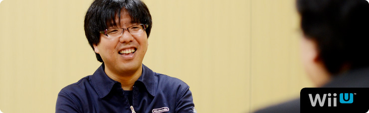 1. “共感ネットワーク” 2. ２階建てのサービス構造 3. ネットワーク方針の大転換 4. 「Wiiが街に」 岩田 “いろんな方たちに参加してもらうサービス” という点においては、『うごくメモ帳』（※17）という、 ひとつの例がありますよね。 このようなサービスもうまく運営できると、 これだけ長い間、活性を維持できることを 近藤さんたちが証明してくれました。 ※17 『うごくメモ帳』＝ニンテンドーDSi、DSi LLに内蔵されたタッチペンで手書きメモを作成できるソフト。何枚も書いたメモを再生して、パラパラマンガ（動画）をつくることもできる。また、インターネットに接続すれば、『うごくメモ帳』でつくった自分の「うごメモ」を公開したり、公開されているほかの人の「うごメモ」を観ることができる。 水木 世の中ではあまり知られてはいないようなんですが、 ユーザー数がずっと右肩上がりでしたよね。 岩田 それで『Miiverse』のサーバー開発をはじめるとき、 水木さんとふたりで、近藤さんに会いに行ったんですけど、 じつはふたつの理由がありました。 ひとつは『うごメモ』でおつき合いがあったこと。 もうひとつは以前、近藤さんから ネットワークサービスに対するご提案を いただいたことがあったからなんです。 その話は、水木さんの話とイコールではありませんでしたが、 内容には関連がありました。 ですから、「この開発をするなら、 以前、任天堂に提案をしてくれたはてなさんに、 まず最初に話を持っていかないといけない」と思って、 近藤さんにご相談に行ったわけです。 近藤 そうでしたね。 そもそもご提案した発端は『うごメモ』にあります。 「うごメモはてな」（※18）のサイトで 「★」をつけたり、コメント機能を追加したり（※19）することで、 アクティブなユーザーがどんどん増えていったんです。 それで気づいたのは、 ゲームをしている人も本当は、 「もっとコミュニケーションをとりたいんだ」 ということでした。 僕自身、子どものころに『マリオブラザーズ』（※20）で、 友達と協力しあって、敵を倒していたことが、 ゲームの楽しい原体験として残っていましたし。 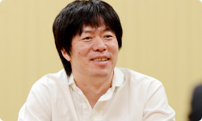 ※18 「うごメモはてな」＝『うごくメモ帳』で書かれた作品を、パソコンやニンテンドーDSiブラウザーなどから楽しめるＷｅｂサイト（２０１３年５月３１日をもってサービス終了）。 ※19 「★」をつけたり、コメント機能を追加したり＝投稿された「うごメモ」を閲覧し、気に入った作品に感想をコメントしたり、面白いと思った気持ちを「★」に変えて気軽に作者へ伝えることができる「うごメモはてな」のシステム。 ※20 『マリオブラザーズ』＝１９８３年、ファミコン用ソフトとして発売されたアクションゲーム。 岩田 ゲームを遊んでいる時間以外に、 友達とゲームについて語り合う時間も、 一連のゲーム体験の面白さの一部なんですよね。 近藤 はい。ゲームを媒介に 人と楽しんできたので、ネットを使えば、 「もっと世界中の人とつながって遊べるのでは？」 という気持ちがありました。 だからお話をいただいたときは、 「いよいよ、きたーっ！」って思いました（笑）。 岩田 （笑）。 水木さんが最初の打ち合わせで、 「近藤さんのお話がすごく勉強になった」 と言っていたことが印象的でしたけど、 とくにどんな話で共感したんですか？ 水木 まず「既存のネットワークサービスのコミュニティは面白い」 という話なんですけど、当時はまだ自分の中で、 「本当にコミュニティをメインに据えていいのかな？」 と、正直、自信がなかったんです。 でも、近藤さんの話を聞いて、確信が持てたんです。 近藤 あ、そうだったんですか。 水木 はい。もうひとつは、 ネットワークサービスの階層構造の話です。 既存のネットワークサービスが１階で、 ２階にオープンなサービスがある、ということで、 １階では「知り合いと安全なやりとりを提供しつつ」 ２階では「見知らぬ人と興味や共感でつながって交流できる」 というイメージを話されていて、 『Miiverse』がこれだけオープンな構造になったのは、 こうした打ち合わせでのインプットが大きかった気がします。 岩田 『Miiverse』も２階建てのサービス構造になっていて、 自分が心を許した人とだけやりとりできる部分と、 同じ興味を持つ、数多くの見知らぬ人と交流できる部分の、 両面があるんですよね。 水木 そうです。 岩田 近藤さんのお話の中で、わたしの印象に残っているのは、 「既存のネットワークサービスのソーシャルグラフ（※21）と、 ゲームのネットワークサービスのソーシャルグラフは、 別物ではないでしょうか？」という視点です。 「既存のサービスでつながっているリアルな人間関係の中で、 ゲームの話がしたいか？」といえば、 「必ずしもイコールとは限らない」というお話でした。 それはわたしの中で、ゼロから独自のソーシャルグラフを つくることを決心させる、大事な言葉でした。 ※21 ソーシャルグラフ＝ＳＮＳ（ソーシャル・ネットワーキング・サービス）などの、ソーシャルメディアにおけるＷｅｂ間での人間関係の相関関係や、そのつながりのこと。現実世界での、リアルな知人関係に基づく関係性を指す場合が多い。 近藤 そうだったんですね。 確かに、既存のネットワークサービスは、 リアルな部分もあるかもしれませんが、 日常って、知り合いじゃない人と接することも多いですよね。 同じ興味を持つ人と知り合うキッカケがあったり、 それについて語り合ったりすることが必要なんです。 水木 確かに “リアルソーシャルグラフ”って言葉を聞くと、 「現実の人間関係が全部入っている」 と思ってしまいますけど、よく考えたら “リアル”って、実際の知り合いだけじゃなく、 見知らぬ人とのやりとりは、現実世界でも多いですもんね。 近藤 ええ。あと、もうひとつ、 とくにアメリカのソーシャルネットワークは、 「人格がひとつじゃなきゃダメ」 みたいな概念がある気がするんですが、 実態は違いますよね？ 水木 ああ、確かに！ 岩田 アメリカ人の友達から聞いたことなんですが、 「ソーシャルネットワークの普及によって いつでも常に周りから見られてしまうので、 “自分はこういう人”っていう一貫性を持って生きていないと、 最近はプライベートタイムも気が抜けなくて大変なんだ」 と話していたことがあります。 その意味で、ソーシャルネットワークの普及で、 みんなが“可視化された世界”に生きているわけで、 便利な世の中になったけれども、 逆に窮屈さも生まれたのかもしれませんね。 水木 わかります。 つい「誕生日おめでとう！」とか、 さしさわりないコメントを書いてしまうとか（笑）。 近藤 そうそう（笑）。 でも友達と接している自分もいれば、 ゲームの中での自分もいて、 いろいろあって、いいと思うんです。 岩田 オンとオフのときでスイッチが切り替わって、 別の人格になっている人は、 いっぱいいるでしょうからね。 水木 その意味では 「ソーシャルネットワークは実名にしなきゃいけない」 という流れがあるなかで、『Miiverse』はそれにこだわらず、 Miiのニックネームを、そのまま表示できるようになっています。 岩田 はい。ただし、ごくわずかですけど、 匿名となると、行儀の悪くなってしまう人がいて、 コミュニティが破壊してしまうことがあります。 実名を使うっていうのは、 それにブレーキを踏むための手段のひとつですけど、 そもそも同じ“共感”で結ばれていたら、 実名かどうかは、あまり関係なくなる気がするんです。 「それぐらい共感で結ばれることは大事ではないか」 と思ったんです。 水木 はい。 岩田 それともうひとつ、わたしが宮本（茂）さんという マリオをつくった人と仕事をしてきて思ったことは、 「宮本さんは“人の共感を得ること”に対して、 とてつもない執念を発揮してものづくりをしている人だ」 と気づいたからなんです。だからこそ、 「『Miiverse』のテーマが“共感”であることは任天堂らしい」 と思ったんです。 水木 それで“共感ネットワーク”なんですね。 いま、その言葉の本当の意味がわかりました（笑）。 近藤 じつは僕もいま、 わかったことがあるんですけど（笑）。 『Miiverse』には、その人の発言に対して、 共感したらポチッと押すだけの 「共感ボタン」がついています。 それは“自分のコメントに対して共感してもらえる” という意味だけではなく、そもそもゲームに対して、 “いっしょに遊んだ人同士が、共感しあう”という “二重の共感”があるんですね。 岩田 そうです。共感しあえば、感想や意見を 交換しやすくなるし、交流が生まれれば、 ゲームがもっと面白くなるはずだし、 『Miiverse』で見知らぬ人との共感が増えれば、 自分に合ったゲームとの出会いのチャンスも広がるはずです。 まさにそこが、わたしがこの企画を進める 強い動機になっています。 水木 あの・・・正直に申しますと、“共感”について 僕も完全に理解していたわけじゃありませんでした。 でもその“共感”というキーワードを元に、 仕様を考えていくことができたんです。 少なくとも“ソーシャル”というキーワードだけだと、 ネットワークの階層構造の１階を 整備することに一生懸命になって、 いまとは違うサービスになっていたかもしれません。 でも“共感”は見知らぬ人同士がつながりあうことだから、 「２階をつくろう」という意識が生まれたんだと思います。 1. “共感ネットワーク” 3. ネットワーク方針の大転換
Wii U GamePad 篇 Miiverse プロデュース 篇 Miiverse 開発スタッフ 篇 インターネットブラウザー 篇 Wii U Chat 篇 New スーパーマリオブラザーズ U 篇 ZombiU（ゾンビU） 篇 Nintendo×JOYSOUND Wii カラオケ U 篇 Nintendo Land 篇 Nintendo TVii 篇 Wii Street U powered by Google 篇 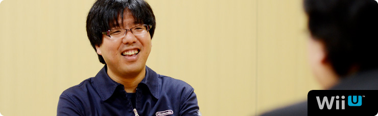 1. “共感ネットワーク” 2. ２階建てのサービス構造 3. ネットワーク方針の大転換 4. 「Wiiが街に」 岩田 “いろんな方たちに参加してもらうサービス” という点においては、『うごくメモ帳』（※17）という、 ひとつの例がありますよね。 このようなサービスもうまく運営できると、 これだけ長い間、活性を維持できることを 近藤さんたちが証明してくれました。 ※17 『うごくメモ帳』＝ニンテンドーDSi、DSi LLに内蔵されたタッチペンで手書きメモを作成できるソフト。何枚も書いたメモを再生して、パラパラマンガ（動画）をつくることもできる。また、インターネットに接続すれば、『うごくメモ帳』でつくった自分の「うごメモ」を公開したり、公開されているほかの人の「うごメモ」を観ることができる。 水木 世の中ではあまり知られてはいないようなんですが、 ユーザー数がずっと右肩上がりでしたよね。 岩田 それで『Miiverse』のサーバー開発をはじめるとき、 水木さんとふたりで、近藤さんに会いに行ったんですけど、 じつはふたつの理由がありました。 ひとつは『うごメモ』でおつき合いがあったこと。 もうひとつは以前、近藤さんから ネットワークサービスに対するご提案を いただいたことがあったからなんです。 その話は、水木さんの話とイコールではありませんでしたが、 内容には関連がありました。 ですから、「この開発をするなら、 以前、任天堂に提案をしてくれたはてなさんに、 まず最初に話を持っていかないといけない」と思って、 近藤さんにご相談に行ったわけです。 近藤 そうでしたね。 そもそもご提案した発端は『うごメモ』にあります。 「うごメモはてな」（※18）のサイトで 「★」をつけたり、コメント機能を追加したり（※19）することで、 アクティブなユーザーがどんどん増えていったんです。 それで気づいたのは、 ゲームをしている人も本当は、 「もっとコミュニケーションをとりたいんだ」 ということでした。 僕自身、子どものころに『マリオブラザーズ』（※20）で、 友達と協力しあって、敵を倒していたことが、 ゲームの楽しい原体験として残っていましたし。 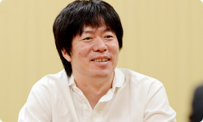 ※18 「うごメモはてな」＝『うごくメモ帳』で書かれた作品を、パソコンやニンテンドーDSiブラウザーなどから楽しめるＷｅｂサイト（２０１３年５月３１日をもってサービス終了）。 ※19 「★」をつけたり、コメント機能を追加したり＝投稿された「うごメモ」を閲覧し、気に入った作品に感想をコメントしたり、面白いと思った気持ちを「★」に変えて気軽に作者へ伝えることができる「うごメモはてな」のシステム。 ※20 『マリオブラザーズ』＝１９８３年、ファミコン用ソフトとして発売されたアクションゲーム。 岩田 ゲームを遊んでいる時間以外に、 友達とゲームについて語り合う時間も、 一連のゲーム体験の面白さの一部なんですよね。 近藤 はい。ゲームを媒介に 人と楽しんできたので、ネットを使えば、 「もっと世界中の人とつながって遊べるのでは？」 という気持ちがありました。 だからお話をいただいたときは、 「いよいよ、きたーっ！」って思いました（笑）。 岩田 （笑）。 水木さんが最初の打ち合わせで、 「近藤さんのお話がすごく勉強になった」 と言っていたことが印象的でしたけど、 とくにどんな話で共感したんですか？ 水木 まず「既存のネットワークサービスのコミュニティは面白い」 という話なんですけど、当時はまだ自分の中で、 「本当にコミュニティをメインに据えていいのかな？」 と、正直、自信がなかったんです。 でも、近藤さんの話を聞いて、確信が持てたんです。 近藤 あ、そうだったんですか。 水木 はい。もうひとつは、 ネットワークサービスの階層構造の話です。 既存のネットワークサービスが１階で、 ２階にオープンなサービスがある、ということで、 １階では「知り合いと安全なやりとりを提供しつつ」 ２階では「見知らぬ人と興味や共感でつながって交流できる」 というイメージを話されていて、 『Miiverse』がこれだけオープンな構造になったのは、 こうした打ち合わせでのインプットが大きかった気がします。 岩田 『Miiverse』も２階建てのサービス構造になっていて、 自分が心を許した人とだけやりとりできる部分と、 同じ興味を持つ、数多くの見知らぬ人と交流できる部分の、 両面があるんですよね。 水木 そうです。 岩田 近藤さんのお話の中で、わたしの印象に残っているのは、 「既存のネットワークサービスのソーシャルグラフ（※21）と、 ゲームのネットワークサービスのソーシャルグラフは、 別物ではないでしょうか？」という視点です。 「既存のサービスでつながっているリアルな人間関係の中で、 ゲームの話がしたいか？」といえば、 「必ずしもイコールとは限らない」というお話でした。 それはわたしの中で、ゼロから独自のソーシャルグラフを つくることを決心させる、大事な言葉でした。 ※21 ソーシャルグラフ＝ＳＮＳ（ソーシャル・ネットワーキング・サービス）などの、ソーシャルメディアにおけるＷｅｂ間での人間関係の相関関係や、そのつながりのこと。現実世界での、リアルな知人関係に基づく関係性を指す場合が多い。 近藤 そうだったんですね。 確かに、既存のネットワークサービスは、 リアルな部分もあるかもしれませんが、 日常って、知り合いじゃない人と接することも多いですよね。 同じ興味を持つ人と知り合うキッカケがあったり、 それについて語り合ったりすることが必要なんです。 水木 確かに “リアルソーシャルグラフ”って言葉を聞くと、 「現実の人間関係が全部入っている」 と思ってしまいますけど、よく考えたら “リアル”って、実際の知り合いだけじゃなく、 見知らぬ人とのやりとりは、現実世界でも多いですもんね。 近藤 ええ。あと、もうひとつ、 とくにアメリカのソーシャルネットワークは、 「人格がひとつじゃなきゃダメ」 みたいな概念がある気がするんですが、 実態は違いますよね？ 水木 ああ、確かに！ 岩田 アメリカ人の友達から聞いたことなんですが、 「ソーシャルネットワークの普及によって いつでも常に周りから見られてしまうので、 “自分はこういう人”っていう一貫性を持って生きていないと、 最近はプライベートタイムも気が抜けなくて大変なんだ」 と話していたことがあります。 その意味で、ソーシャルネットワークの普及で、 みんなが“可視化された世界”に生きているわけで、 便利な世の中になったけれども、 逆に窮屈さも生まれたのかもしれませんね。 水木 わかります。 つい「誕生日おめでとう！」とか、 さしさわりないコメントを書いてしまうとか（笑）。 近藤 そうそう（笑）。 でも友達と接している自分もいれば、 ゲームの中での自分もいて、 いろいろあって、いいと思うんです。 岩田 オンとオフのときでスイッチが切り替わって、 別の人格になっている人は、 いっぱいいるでしょうからね。 水木 その意味では 「ソーシャルネットワークは実名にしなきゃいけない」 という流れがあるなかで、『Miiverse』はそれにこだわらず、 Miiのニックネームを、そのまま表示できるようになっています。 岩田 はい。ただし、ごくわずかですけど、 匿名となると、行儀の悪くなってしまう人がいて、 コミュニティが破壊してしまうことがあります。 実名を使うっていうのは、 それにブレーキを踏むための手段のひとつですけど、 そもそも同じ“共感”で結ばれていたら、 実名かどうかは、あまり関係なくなる気がするんです。 「それぐらい共感で結ばれることは大事ではないか」 と思ったんです。 水木 はい。 岩田 それともうひとつ、わたしが宮本（茂）さんという マリオをつくった人と仕事をしてきて思ったことは、 「宮本さんは“人の共感を得ること”に対して、 とてつもない執念を発揮してものづくりをしている人だ」 と気づいたからなんです。だからこそ、 「『Miiverse』のテーマが“共感”であることは任天堂らしい」 と思ったんです。 水木 それで“共感ネットワーク”なんですね。 いま、その言葉の本当の意味がわかりました（笑）。 近藤 じつは僕もいま、 わかったことがあるんですけど（笑）。 『Miiverse』には、その人の発言に対して、 共感したらポチッと押すだけの 「共感ボタン」がついています。 それは“自分のコメントに対して共感してもらえる” という意味だけではなく、そもそもゲームに対して、 “いっしょに遊んだ人同士が、共感しあう”という “二重の共感”があるんですね。 岩田 そうです。共感しあえば、感想や意見を 交換しやすくなるし、交流が生まれれば、 ゲームがもっと面白くなるはずだし、 『Miiverse』で見知らぬ人との共感が増えれば、 自分に合ったゲームとの出会いのチャンスも広がるはずです。 まさにそこが、わたしがこの企画を進める 強い動機になっています。 水木 あの・・・正直に申しますと、“共感”について 僕も完全に理解していたわけじゃありませんでした。 でもその“共感”というキーワードを元に、 仕様を考えていくことができたんです。 少なくとも“ソーシャル”というキーワードだけだと、 ネットワークの階層構造の１階を 整備することに一生懸命になって、 いまとは違うサービスになっていたかもしれません。 でも“共感”は見知らぬ人同士がつながりあうことだから、 「２階をつくろう」という意識が生まれたんだと思います。 1. “共感ネットワーク” 3. ネットワーク方針の大転換
Miiverse プロデュース 篇 Miiverse 開発スタッフ 篇 インターネットブラウザー 篇 Wii U Chat 篇 New スーパーマリオブラザーズ U 篇 ZombiU（ゾンビU） 篇 Nintendo×JOYSOUND Wii カラオケ U 篇 Nintendo Land 篇 Nintendo TVii 篇 Wii Street U powered by Google 篇 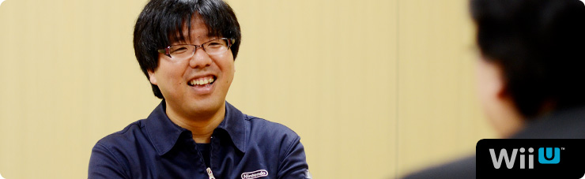 1. “共感ネットワーク” 2. ２階建てのサービス構造 3. ネットワーク方針の大転換 4. 「Wiiが街に」 岩田 “いろんな方たちに参加してもらうサービス” という点においては、『うごくメモ帳』（※17）という、 ひとつの例がありますよね。 このようなサービスもうまく運営できると、 これだけ長い間、活性を維持できることを 近藤さんたちが証明してくれました。 ※17 『うごくメモ帳』＝ニンテンドーDSi、DSi LLに内蔵されたタッチペンで手書きメモを作成できるソフト。何枚も書いたメモを再生して、パラパラマンガ（動画）をつくることもできる。また、インターネットに接続すれば、『うごくメモ帳』でつくった自分の「うごメモ」を公開したり、公開されているほかの人の「うごメモ」を観ることができる。 水木 世の中ではあまり知られてはいないようなんですが、 ユーザー数がずっと右肩上がりでしたよね。 岩田 それで『Miiverse』のサーバー開発をはじめるとき、 水木さんとふたりで、近藤さんに会いに行ったんですけど、 じつはふたつの理由がありました。 ひとつは『うごメモ』でおつき合いがあったこと。 もうひとつは以前、近藤さんから ネットワークサービスに対するご提案を いただいたことがあったからなんです。 その話は、水木さんの話とイコールではありませんでしたが、 内容には関連がありました。 ですから、「この開発をするなら、 以前、任天堂に提案をしてくれたはてなさんに、 まず最初に話を持っていかないといけない」と思って、 近藤さんにご相談に行ったわけです。 近藤 そうでしたね。 そもそもご提案した発端は『うごメモ』にあります。 「うごメモはてな」（※18）のサイトで 「★」をつけたり、コメント機能を追加したり（※19）することで、 アクティブなユーザーがどんどん増えていったんです。 それで気づいたのは、 ゲームをしている人も本当は、 「もっとコミュニケーションをとりたいんだ」 ということでした。 僕自身、子どものころに『マリオブラザーズ』（※20）で、 友達と協力しあって、敵を倒していたことが、 ゲームの楽しい原体験として残っていましたし。 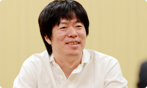 ※18 「うごメモはてな」＝『うごくメモ帳』で書かれた作品を、パソコンやニンテンドーDSiブラウザーなどから楽しめるＷｅｂサイト（２０１３年５月３１日をもってサービス終了）。 ※19 「★」をつけたり、コメント機能を追加したり＝投稿された「うごメモ」を閲覧し、気に入った作品に感想をコメントしたり、面白いと思った気持ちを「★」に変えて気軽に作者へ伝えることができる「うごメモはてな」のシステム。 ※20 『マリオブラザーズ』＝１９８３年、ファミコン用ソフトとして発売されたアクションゲーム。 岩田 ゲームを遊んでいる時間以外に、 友達とゲームについて語り合う時間も、 一連のゲーム体験の面白さの一部なんですよね。 近藤 はい。ゲームを媒介に 人と楽しんできたので、ネットを使えば、 「もっと世界中の人とつながって遊べるのでは？」 という気持ちがありました。 だからお話をいただいたときは、 「いよいよ、きたーっ！」って思いました（笑）。 岩田 （笑）。 水木さんが最初の打ち合わせで、 「近藤さんのお話がすごく勉強になった」 と言っていたことが印象的でしたけど、 とくにどんな話で共感したんですか？ 水木 まず「既存のネットワークサービスのコミュニティは面白い」 という話なんですけど、当時はまだ自分の中で、 「本当にコミュニティをメインに据えていいのかな？」 と、正直、自信がなかったんです。 でも、近藤さんの話を聞いて、確信が持てたんです。 近藤 あ、そうだったんですか。 水木 はい。もうひとつは、 ネットワークサービスの階層構造の話です。 既存のネットワークサービスが１階で、 ２階にオープンなサービスがある、ということで、 １階では「知り合いと安全なやりとりを提供しつつ」 ２階では「見知らぬ人と興味や共感でつながって交流できる」 というイメージを話されていて、 『Miiverse』がこれだけオープンな構造になったのは、 こうした打ち合わせでのインプットが大きかった気がします。 岩田 『Miiverse』も２階建てのサービス構造になっていて、 自分が心を許した人とだけやりとりできる部分と、 同じ興味を持つ、数多くの見知らぬ人と交流できる部分の、 両面があるんですよね。 水木 そうです。 岩田 近藤さんのお話の中で、わたしの印象に残っているのは、 「既存のネットワークサービスのソーシャルグラフ（※21）と、 ゲームのネットワークサービスのソーシャルグラフは、 別物ではないでしょうか？」という視点です。 「既存のサービスでつながっているリアルな人間関係の中で、 ゲームの話がしたいか？」といえば、 「必ずしもイコールとは限らない」というお話でした。 それはわたしの中で、ゼロから独自のソーシャルグラフを つくることを決心させる、大事な言葉でした。 ※21 ソーシャルグラフ＝ＳＮＳ（ソーシャル・ネットワーキング・サービス）などの、ソーシャルメディアにおけるＷｅｂ間での人間関係の相関関係や、そのつながりのこと。現実世界での、リアルな知人関係に基づく関係性を指す場合が多い。 近藤 そうだったんですね。 確かに、既存のネットワークサービスは、 リアルな部分もあるかもしれませんが、 日常って、知り合いじゃない人と接することも多いですよね。 同じ興味を持つ人と知り合うキッカケがあったり、 それについて語り合ったりすることが必要なんです。 水木 確かに “リアルソーシャルグラフ”って言葉を聞くと、 「現実の人間関係が全部入っている」 と思ってしまいますけど、よく考えたら “リアル”って、実際の知り合いだけじゃなく、 見知らぬ人とのやりとりは、現実世界でも多いですもんね。 近藤 ええ。あと、もうひとつ、 とくにアメリカのソーシャルネットワークは、 「人格がひとつじゃなきゃダメ」 みたいな概念がある気がするんですが、 実態は違いますよね？ 水木 ああ、確かに！ 岩田 アメリカ人の友達から聞いたことなんですが、 「ソーシャルネットワークの普及によって いつでも常に周りから見られてしまうので、 “自分はこういう人”っていう一貫性を持って生きていないと、 最近はプライベートタイムも気が抜けなくて大変なんだ」 と話していたことがあります。 その意味で、ソーシャルネットワークの普及で、 みんなが“可視化された世界”に生きているわけで、 便利な世の中になったけれども、 逆に窮屈さも生まれたのかもしれませんね。 水木 わかります。 つい「誕生日おめでとう！」とか、 さしさわりないコメントを書いてしまうとか（笑）。 近藤 そうそう（笑）。 でも友達と接している自分もいれば、 ゲームの中での自分もいて、 いろいろあって、いいと思うんです。 岩田 オンとオフのときでスイッチが切り替わって、 別の人格になっている人は、 いっぱいいるでしょうからね。 水木 その意味では 「ソーシャルネットワークは実名にしなきゃいけない」 という流れがあるなかで、『Miiverse』はそれにこだわらず、 Miiのニックネームを、そのまま表示できるようになっています。 岩田 はい。ただし、ごくわずかですけど、 匿名となると、行儀の悪くなってしまう人がいて、 コミュニティが破壊してしまうことがあります。 実名を使うっていうのは、 それにブレーキを踏むための手段のひとつですけど、 そもそも同じ“共感”で結ばれていたら、 実名かどうかは、あまり関係なくなる気がするんです。 「それぐらい共感で結ばれることは大事ではないか」 と思ったんです。 水木 はい。 岩田 それともうひとつ、わたしが宮本（茂）さんという マリオをつくった人と仕事をしてきて思ったことは、 「宮本さんは“人の共感を得ること”に対して、 とてつもない執念を発揮してものづくりをしている人だ」 と気づいたからなんです。だからこそ、 「『Miiverse』のテーマが“共感”であることは任天堂らしい」 と思ったんです。 水木 それで“共感ネットワーク”なんですね。 いま、その言葉の本当の意味がわかりました（笑）。 近藤 じつは僕もいま、 わかったことがあるんですけど（笑）。 『Miiverse』には、その人の発言に対して、 共感したらポチッと押すだけの 「共感ボタン」がついています。 それは“自分のコメントに対して共感してもらえる” という意味だけではなく、そもそもゲームに対して、 “いっしょに遊んだ人同士が、共感しあう”という “二重の共感”があるんですね。 岩田 そうです。共感しあえば、感想や意見を 交換しやすくなるし、交流が生まれれば、 ゲームがもっと面白くなるはずだし、 『Miiverse』で見知らぬ人との共感が増えれば、 自分に合ったゲームとの出会いのチャンスも広がるはずです。 まさにそこが、わたしがこの企画を進める 強い動機になっています。 水木 あの・・・正直に申しますと、“共感”について 僕も完全に理解していたわけじゃありませんでした。 でもその“共感”というキーワードを元に、 仕様を考えていくことができたんです。 少なくとも“ソーシャル”というキーワードだけだと、 ネットワークの階層構造の１階を 整備することに一生懸命になって、 いまとは違うサービスになっていたかもしれません。 でも“共感”は見知らぬ人同士がつながりあうことだから、 「２階をつくろう」という意識が生まれたんだと思います。 1. “共感ネットワーク” 3. ネットワーク方針の大転換
Miiverse 開発スタッフ 篇 インターネットブラウザー 篇 Wii U Chat 篇 New スーパーマリオブラザーズ U 篇 ZombiU（ゾンビU） 篇 Nintendo×JOYSOUND Wii カラオケ U 篇 Nintendo Land 篇 Nintendo TVii 篇 Wii Street U powered by Google 篇 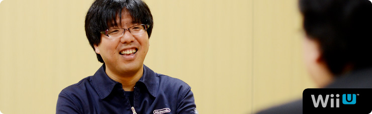 1. “共感ネットワーク” 2. ２階建てのサービス構造 3. ネットワーク方針の大転換 4. 「Wiiが街に」 岩田 “いろんな方たちに参加してもらうサービス” という点においては、『うごくメモ帳』（※17）という、 ひとつの例がありますよね。 このようなサービスもうまく運営できると、 これだけ長い間、活性を維持できることを 近藤さんたちが証明してくれました。 ※17 『うごくメモ帳』＝ニンテンドーDSi、DSi LLに内蔵されたタッチペンで手書きメモを作成できるソフト。何枚も書いたメモを再生して、パラパラマンガ（動画）をつくることもできる。また、インターネットに接続すれば、『うごくメモ帳』でつくった自分の「うごメモ」を公開したり、公開されているほかの人の「うごメモ」を観ることができる。 水木 世の中ではあまり知られてはいないようなんですが、 ユーザー数がずっと右肩上がりでしたよね。 岩田 それで『Miiverse』のサーバー開発をはじめるとき、 水木さんとふたりで、近藤さんに会いに行ったんですけど、 じつはふたつの理由がありました。 ひとつは『うごメモ』でおつき合いがあったこと。 もうひとつは以前、近藤さんから ネットワークサービスに対するご提案を いただいたことがあったからなんです。 その話は、水木さんの話とイコールではありませんでしたが、 内容には関連がありました。 ですから、「この開発をするなら、 以前、任天堂に提案をしてくれたはてなさんに、 まず最初に話を持っていかないといけない」と思って、 近藤さんにご相談に行ったわけです。 近藤 そうでしたね。 そもそもご提案した発端は『うごメモ』にあります。 「うごメモはてな」（※18）のサイトで 「★」をつけたり、コメント機能を追加したり（※19）することで、 アクティブなユーザーがどんどん増えていったんです。 それで気づいたのは、 ゲームをしている人も本当は、 「もっとコミュニケーションをとりたいんだ」 ということでした。 僕自身、子どものころに『マリオブラザーズ』（※20）で、 友達と協力しあって、敵を倒していたことが、 ゲームの楽しい原体験として残っていましたし。 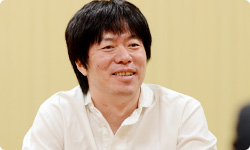 ※18 「うごメモはてな」＝『うごくメモ帳』で書かれた作品を、パソコンやニンテンドーDSiブラウザーなどから楽しめるＷｅｂサイト（２０１３年５月３１日をもってサービス終了）。 ※19 「★」をつけたり、コメント機能を追加したり＝投稿された「うごメモ」を閲覧し、気に入った作品に感想をコメントしたり、面白いと思った気持ちを「★」に変えて気軽に作者へ伝えることができる「うごメモはてな」のシステム。 ※20 『マリオブラザーズ』＝１９８３年、ファミコン用ソフトとして発売されたアクションゲーム。 岩田 ゲームを遊んでいる時間以外に、 友達とゲームについて語り合う時間も、 一連のゲーム体験の面白さの一部なんですよね。 近藤 はい。ゲームを媒介に 人と楽しんできたので、ネットを使えば、 「もっと世界中の人とつながって遊べるのでは？」 という気持ちがありました。 だからお話をいただいたときは、 「いよいよ、きたーっ！」って思いました（笑）。 岩田 （笑）。 水木さんが最初の打ち合わせで、 「近藤さんのお話がすごく勉強になった」 と言っていたことが印象的でしたけど、 とくにどんな話で共感したんですか？ 水木 まず「既存のネットワークサービスのコミュニティは面白い」 という話なんですけど、当時はまだ自分の中で、 「本当にコミュニティをメインに据えていいのかな？」 と、正直、自信がなかったんです。 でも、近藤さんの話を聞いて、確信が持てたんです。 近藤 あ、そうだったんですか。 水木 はい。もうひとつは、 ネットワークサービスの階層構造の話です。 既存のネットワークサービスが１階で、 ２階にオープンなサービスがある、ということで、 １階では「知り合いと安全なやりとりを提供しつつ」 ２階では「見知らぬ人と興味や共感でつながって交流できる」 というイメージを話されていて、 『Miiverse』がこれだけオープンな構造になったのは、 こうした打ち合わせでのインプットが大きかった気がします。 岩田 『Miiverse』も２階建てのサービス構造になっていて、 自分が心を許した人とだけやりとりできる部分と、 同じ興味を持つ、数多くの見知らぬ人と交流できる部分の、 両面があるんですよね。 水木 そうです。 岩田 近藤さんのお話の中で、わたしの印象に残っているのは、 「既存のネットワークサービスのソーシャルグラフ（※21）と、 ゲームのネットワークサービスのソーシャルグラフは、 別物ではないでしょうか？」という視点です。 「既存のサービスでつながっているリアルな人間関係の中で、 ゲームの話がしたいか？」といえば、 「必ずしもイコールとは限らない」というお話でした。 それはわたしの中で、ゼロから独自のソーシャルグラフを つくることを決心させる、大事な言葉でした。 ※21 ソーシャルグラフ＝ＳＮＳ（ソーシャル・ネットワーキング・サービス）などの、ソーシャルメディアにおけるＷｅｂ間での人間関係の相関関係や、そのつながりのこと。現実世界での、リアルな知人関係に基づく関係性を指す場合が多い。 近藤 そうだったんですね。 確かに、既存のネットワークサービスは、 リアルな部分もあるかもしれませんが、 日常って、知り合いじゃない人と接することも多いですよね。 同じ興味を持つ人と知り合うキッカケがあったり、 それについて語り合ったりすることが必要なんです。 水木 確かに “リアルソーシャルグラフ”って言葉を聞くと、 「現実の人間関係が全部入っている」 と思ってしまいますけど、よく考えたら “リアル”って、実際の知り合いだけじゃなく、 見知らぬ人とのやりとりは、現実世界でも多いですもんね。 近藤 ええ。あと、もうひとつ、 とくにアメリカのソーシャルネットワークは、 「人格がひとつじゃなきゃダメ」 みたいな概念がある気がするんですが、 実態は違いますよね？ 水木 ああ、確かに！ 岩田 アメリカ人の友達から聞いたことなんですが、 「ソーシャルネットワークの普及によって いつでも常に周りから見られてしまうので、 “自分はこういう人”っていう一貫性を持って生きていないと、 最近はプライベートタイムも気が抜けなくて大変なんだ」 と話していたことがあります。 その意味で、ソーシャルネットワークの普及で、 みんなが“可視化された世界”に生きているわけで、 便利な世の中になったけれども、 逆に窮屈さも生まれたのかもしれませんね。 水木 わかります。 つい「誕生日おめでとう！」とか、 さしさわりないコメントを書いてしまうとか（笑）。 近藤 そうそう（笑）。 でも友達と接している自分もいれば、 ゲームの中での自分もいて、 いろいろあって、いいと思うんです。 岩田 オンとオフのときでスイッチが切り替わって、 別の人格になっている人は、 いっぱいいるでしょうからね。 水木 その意味では 「ソーシャルネットワークは実名にしなきゃいけない」 という流れがあるなかで、『Miiverse』はそれにこだわらず、 Miiのニックネームを、そのまま表示できるようになっています。 岩田 はい。ただし、ごくわずかですけど、 匿名となると、行儀の悪くなってしまう人がいて、 コミュニティが破壊してしまうことがあります。 実名を使うっていうのは、 それにブレーキを踏むための手段のひとつですけど、 そもそも同じ“共感”で結ばれていたら、 実名かどうかは、あまり関係なくなる気がするんです。 「それぐらい共感で結ばれることは大事ではないか」 と思ったんです。 水木 はい。 岩田 それともうひとつ、わたしが宮本（茂）さんという マリオをつくった人と仕事をしてきて思ったことは、 「宮本さんは“人の共感を得ること”に対して、 とてつもない執念を発揮してものづくりをしている人だ」 と気づいたからなんです。だからこそ、 「『Miiverse』のテーマが“共感”であることは任天堂らしい」 と思ったんです。 水木 それで“共感ネットワーク”なんですね。 いま、その言葉の本当の意味がわかりました（笑）。 近藤 じつは僕もいま、 わかったことがあるんですけど（笑）。 『Miiverse』には、その人の発言に対して、 共感したらポチッと押すだけの 「共感ボタン」がついています。 それは“自分のコメントに対して共感してもらえる” という意味だけではなく、そもそもゲームに対して、 “いっしょに遊んだ人同士が、共感しあう”という “二重の共感”があるんですね。 岩田 そうです。共感しあえば、感想や意見を 交換しやすくなるし、交流が生まれれば、 ゲームがもっと面白くなるはずだし、 『Miiverse』で見知らぬ人との共感が増えれば、 自分に合ったゲームとの出会いのチャンスも広がるはずです。 まさにそこが、わたしがこの企画を進める 強い動機になっています。 水木 あの・・・正直に申しますと、“共感”について 僕も完全に理解していたわけじゃありませんでした。 でもその“共感”というキーワードを元に、 仕様を考えていくことができたんです。 少なくとも“ソーシャル”というキーワードだけだと、 ネットワークの階層構造の１階を 整備することに一生懸命になって、 いまとは違うサービスになっていたかもしれません。 でも“共感”は見知らぬ人同士がつながりあうことだから、 「２階をつくろう」という意識が生まれたんだと思います。 1. “共感ネットワーク” 3. ネットワーク方針の大転換
インターネットブラウザー 篇 Wii U Chat 篇 New スーパーマリオブラザーズ U 篇 ZombiU（ゾンビU） 篇 Nintendo×JOYSOUND Wii カラオケ U 篇 Nintendo Land 篇 Nintendo TVii 篇 Wii Street U powered by Google 篇 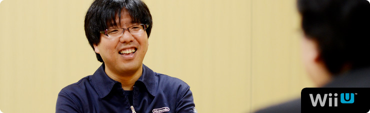 1. “共感ネットワーク” 2. ２階建てのサービス構造 3. ネットワーク方針の大転換 4. 「Wiiが街に」 岩田 “いろんな方たちに参加してもらうサービス” という点においては、『うごくメモ帳』（※17）という、 ひとつの例がありますよね。 このようなサービスもうまく運営できると、 これだけ長い間、活性を維持できることを 近藤さんたちが証明してくれました。 ※17 『うごくメモ帳』＝ニンテンドーDSi、DSi LLに内蔵されたタッチペンで手書きメモを作成できるソフト。何枚も書いたメモを再生して、パラパラマンガ（動画）をつくることもできる。また、インターネットに接続すれば、『うごくメモ帳』でつくった自分の「うごメモ」を公開したり、公開されているほかの人の「うごメモ」を観ることができる。 水木 世の中ではあまり知られてはいないようなんですが、 ユーザー数がずっと右肩上がりでしたよね。 岩田 それで『Miiverse』のサーバー開発をはじめるとき、 水木さんとふたりで、近藤さんに会いに行ったんですけど、 じつはふたつの理由がありました。 ひとつは『うごメモ』でおつき合いがあったこと。 もうひとつは以前、近藤さんから ネットワークサービスに対するご提案を いただいたことがあったからなんです。 その話は、水木さんの話とイコールではありませんでしたが、 内容には関連がありました。 ですから、「この開発をするなら、 以前、任天堂に提案をしてくれたはてなさんに、 まず最初に話を持っていかないといけない」と思って、 近藤さんにご相談に行ったわけです。 近藤 そうでしたね。 そもそもご提案した発端は『うごメモ』にあります。 「うごメモはてな」（※18）のサイトで 「★」をつけたり、コメント機能を追加したり（※19）することで、 アクティブなユーザーがどんどん増えていったんです。 それで気づいたのは、 ゲームをしている人も本当は、 「もっとコミュニケーションをとりたいんだ」 ということでした。 僕自身、子どものころに『マリオブラザーズ』（※20）で、 友達と協力しあって、敵を倒していたことが、 ゲームの楽しい原体験として残っていましたし。 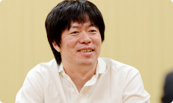 ※18 「うごメモはてな」＝『うごくメモ帳』で書かれた作品を、パソコンやニンテンドーDSiブラウザーなどから楽しめるＷｅｂサイト（２０１３年５月３１日をもってサービス終了）。 ※19 「★」をつけたり、コメント機能を追加したり＝投稿された「うごメモ」を閲覧し、気に入った作品に感想をコメントしたり、面白いと思った気持ちを「★」に変えて気軽に作者へ伝えることができる「うごメモはてな」のシステム。 ※20 『マリオブラザーズ』＝１９８３年、ファミコン用ソフトとして発売されたアクションゲーム。 岩田 ゲームを遊んでいる時間以外に、 友達とゲームについて語り合う時間も、 一連のゲーム体験の面白さの一部なんですよね。 近藤 はい。ゲームを媒介に 人と楽しんできたので、ネットを使えば、 「もっと世界中の人とつながって遊べるのでは？」 という気持ちがありました。 だからお話をいただいたときは、 「いよいよ、きたーっ！」って思いました（笑）。 岩田 （笑）。 水木さんが最初の打ち合わせで、 「近藤さんのお話がすごく勉強になった」 と言っていたことが印象的でしたけど、 とくにどんな話で共感したんですか？ 水木 まず「既存のネットワークサービスのコミュニティは面白い」 という話なんですけど、当時はまだ自分の中で、 「本当にコミュニティをメインに据えていいのかな？」 と、正直、自信がなかったんです。 でも、近藤さんの話を聞いて、確信が持てたんです。 近藤 あ、そうだったんですか。 水木 はい。もうひとつは、 ネットワークサービスの階層構造の話です。 既存のネットワークサービスが１階で、 ２階にオープンなサービスがある、ということで、 １階では「知り合いと安全なやりとりを提供しつつ」 ２階では「見知らぬ人と興味や共感でつながって交流できる」 というイメージを話されていて、 『Miiverse』がこれだけオープンな構造になったのは、 こうした打ち合わせでのインプットが大きかった気がします。 岩田 『Miiverse』も２階建てのサービス構造になっていて、 自分が心を許した人とだけやりとりできる部分と、 同じ興味を持つ、数多くの見知らぬ人と交流できる部分の、 両面があるんですよね。 水木 そうです。 岩田 近藤さんのお話の中で、わたしの印象に残っているのは、 「既存のネットワークサービスのソーシャルグラフ（※21）と、 ゲームのネットワークサービスのソーシャルグラフは、 別物ではないでしょうか？」という視点です。 「既存のサービスでつながっているリアルな人間関係の中で、 ゲームの話がしたいか？」といえば、 「必ずしもイコールとは限らない」というお話でした。 それはわたしの中で、ゼロから独自のソーシャルグラフを つくることを決心させる、大事な言葉でした。 ※21 ソーシャルグラフ＝ＳＮＳ（ソーシャル・ネットワーキング・サービス）などの、ソーシャルメディアにおけるＷｅｂ間での人間関係の相関関係や、そのつながりのこと。現実世界での、リアルな知人関係に基づく関係性を指す場合が多い。 近藤 そうだったんですね。 確かに、既存のネットワークサービスは、 リアルな部分もあるかもしれませんが、 日常って、知り合いじゃない人と接することも多いですよね。 同じ興味を持つ人と知り合うキッカケがあったり、 それについて語り合ったりすることが必要なんです。 水木 確かに “リアルソーシャルグラフ”って言葉を聞くと、 「現実の人間関係が全部入っている」 と思ってしまいますけど、よく考えたら “リアル”って、実際の知り合いだけじゃなく、 見知らぬ人とのやりとりは、現実世界でも多いですもんね。 近藤 ええ。あと、もうひとつ、 とくにアメリカのソーシャルネットワークは、 「人格がひとつじゃなきゃダメ」 みたいな概念がある気がするんですが、 実態は違いますよね？ 水木 ああ、確かに！ 岩田 アメリカ人の友達から聞いたことなんですが、 「ソーシャルネットワークの普及によって いつでも常に周りから見られてしまうので、 “自分はこういう人”っていう一貫性を持って生きていないと、 最近はプライベートタイムも気が抜けなくて大変なんだ」 と話していたことがあります。 その意味で、ソーシャルネットワークの普及で、 みんなが“可視化された世界”に生きているわけで、 便利な世の中になったけれども、 逆に窮屈さも生まれたのかもしれませんね。 水木 わかります。 つい「誕生日おめでとう！」とか、 さしさわりないコメントを書いてしまうとか（笑）。 近藤 そうそう（笑）。 でも友達と接している自分もいれば、 ゲームの中での自分もいて、 いろいろあって、いいと思うんです。 岩田 オンとオフのときでスイッチが切り替わって、 別の人格になっている人は、 いっぱいいるでしょうからね。 水木 その意味では 「ソーシャルネットワークは実名にしなきゃいけない」 という流れがあるなかで、『Miiverse』はそれにこだわらず、 Miiのニックネームを、そのまま表示できるようになっています。 岩田 はい。ただし、ごくわずかですけど、 匿名となると、行儀の悪くなってしまう人がいて、 コミュニティが破壊してしまうことがあります。 実名を使うっていうのは、 それにブレーキを踏むための手段のひとつですけど、 そもそも同じ“共感”で結ばれていたら、 実名かどうかは、あまり関係なくなる気がするんです。 「それぐらい共感で結ばれることは大事ではないか」 と思ったんです。 水木 はい。 岩田 それともうひとつ、わたしが宮本（茂）さんという マリオをつくった人と仕事をしてきて思ったことは、 「宮本さんは“人の共感を得ること”に対して、 とてつもない執念を発揮してものづくりをしている人だ」 と気づいたからなんです。だからこそ、 「『Miiverse』のテーマが“共感”であることは任天堂らしい」 と思ったんです。 水木 それで“共感ネットワーク”なんですね。 いま、その言葉の本当の意味がわかりました（笑）。 近藤 じつは僕もいま、 わかったことがあるんですけど（笑）。 『Miiverse』には、その人の発言に対して、 共感したらポチッと押すだけの 「共感ボタン」がついています。 それは“自分のコメントに対して共感してもらえる” という意味だけではなく、そもそもゲームに対して、 “いっしょに遊んだ人同士が、共感しあう”という “二重の共感”があるんですね。 岩田 そうです。共感しあえば、感想や意見を 交換しやすくなるし、交流が生まれれば、 ゲームがもっと面白くなるはずだし、 『Miiverse』で見知らぬ人との共感が増えれば、 自分に合ったゲームとの出会いのチャンスも広がるはずです。 まさにそこが、わたしがこの企画を進める 強い動機になっています。 水木 あの・・・正直に申しますと、“共感”について 僕も完全に理解していたわけじゃありませんでした。 でもその“共感”というキーワードを元に、 仕様を考えていくことができたんです。 少なくとも“ソーシャル”というキーワードだけだと、 ネットワークの階層構造の１階を 整備することに一生懸命になって、 いまとは違うサービスになっていたかもしれません。 でも“共感”は見知らぬ人同士がつながりあうことだから、 「２階をつくろう」という意識が生まれたんだと思います。 1. “共感ネットワーク” 3. ネットワーク方針の大転換
Wii U Chat 篇 New スーパーマリオブラザーズ U 篇 ZombiU（ゾンビU） 篇 Nintendo×JOYSOUND Wii カラオケ U 篇 Nintendo Land 篇 Nintendo TVii 篇 Wii Street U powered by Google 篇 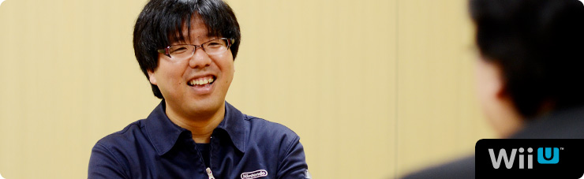 1. “共感ネットワーク” 2. ２階建てのサービス構造 3. ネットワーク方針の大転換 4. 「Wiiが街に」 岩田 “いろんな方たちに参加してもらうサービス” という点においては、『うごくメモ帳』（※17）という、 ひとつの例がありますよね。 このようなサービスもうまく運営できると、 これだけ長い間、活性を維持できることを 近藤さんたちが証明してくれました。 ※17 『うごくメモ帳』＝ニンテンドーDSi、DSi LLに内蔵されたタッチペンで手書きメモを作成できるソフト。何枚も書いたメモを再生して、パラパラマンガ（動画）をつくることもできる。また、インターネットに接続すれば、『うごくメモ帳』でつくった自分の「うごメモ」を公開したり、公開されているほかの人の「うごメモ」を観ることができる。 水木 世の中ではあまり知られてはいないようなんですが、 ユーザー数がずっと右肩上がりでしたよね。 岩田 それで『Miiverse』のサーバー開発をはじめるとき、 水木さんとふたりで、近藤さんに会いに行ったんですけど、 じつはふたつの理由がありました。 ひとつは『うごメモ』でおつき合いがあったこと。 もうひとつは以前、近藤さんから ネットワークサービスに対するご提案を いただいたことがあったからなんです。 その話は、水木さんの話とイコールではありませんでしたが、 内容には関連がありました。 ですから、「この開発をするなら、 以前、任天堂に提案をしてくれたはてなさんに、 まず最初に話を持っていかないといけない」と思って、 近藤さんにご相談に行ったわけです。 近藤 そうでしたね。 そもそもご提案した発端は『うごメモ』にあります。 「うごメモはてな」（※18）のサイトで 「★」をつけたり、コメント機能を追加したり（※19）することで、 アクティブなユーザーがどんどん増えていったんです。 それで気づいたのは、 ゲームをしている人も本当は、 「もっとコミュニケーションをとりたいんだ」 ということでした。 僕自身、子どものころに『マリオブラザーズ』（※20）で、 友達と協力しあって、敵を倒していたことが、 ゲームの楽しい原体験として残っていましたし。 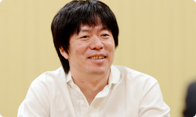 ※18 「うごメモはてな」＝『うごくメモ帳』で書かれた作品を、パソコンやニンテンドーDSiブラウザーなどから楽しめるＷｅｂサイト（２０１３年５月３１日をもってサービス終了）。 ※19 「★」をつけたり、コメント機能を追加したり＝投稿された「うごメモ」を閲覧し、気に入った作品に感想をコメントしたり、面白いと思った気持ちを「★」に変えて気軽に作者へ伝えることができる「うごメモはてな」のシステム。 ※20 『マリオブラザーズ』＝１９８３年、ファミコン用ソフトとして発売されたアクションゲーム。 岩田 ゲームを遊んでいる時間以外に、 友達とゲームについて語り合う時間も、 一連のゲーム体験の面白さの一部なんですよね。 近藤 はい。ゲームを媒介に 人と楽しんできたので、ネットを使えば、 「もっと世界中の人とつながって遊べるのでは？」 という気持ちがありました。 だからお話をいただいたときは、 「いよいよ、きたーっ！」って思いました（笑）。 岩田 （笑）。 水木さんが最初の打ち合わせで、 「近藤さんのお話がすごく勉強になった」 と言っていたことが印象的でしたけど、 とくにどんな話で共感したんですか？ 水木 まず「既存のネットワークサービスのコミュニティは面白い」 という話なんですけど、当時はまだ自分の中で、 「本当にコミュニティをメインに据えていいのかな？」 と、正直、自信がなかったんです。 でも、近藤さんの話を聞いて、確信が持てたんです。 近藤 あ、そうだったんですか。 水木 はい。もうひとつは、 ネットワークサービスの階層構造の話です。 既存のネットワークサービスが１階で、 ２階にオープンなサービスがある、ということで、 １階では「知り合いと安全なやりとりを提供しつつ」 ２階では「見知らぬ人と興味や共感でつながって交流できる」 というイメージを話されていて、 『Miiverse』がこれだけオープンな構造になったのは、 こうした打ち合わせでのインプットが大きかった気がします。 岩田 『Miiverse』も２階建てのサービス構造になっていて、 自分が心を許した人とだけやりとりできる部分と、 同じ興味を持つ、数多くの見知らぬ人と交流できる部分の、 両面があるんですよね。 水木 そうです。 岩田 近藤さんのお話の中で、わたしの印象に残っているのは、 「既存のネットワークサービスのソーシャルグラフ（※21）と、 ゲームのネットワークサービスのソーシャルグラフは、 別物ではないでしょうか？」という視点です。 「既存のサービスでつながっているリアルな人間関係の中で、 ゲームの話がしたいか？」といえば、 「必ずしもイコールとは限らない」というお話でした。 それはわたしの中で、ゼロから独自のソーシャルグラフを つくることを決心させる、大事な言葉でした。 ※21 ソーシャルグラフ＝ＳＮＳ（ソーシャル・ネットワーキング・サービス）などの、ソーシャルメディアにおけるＷｅｂ間での人間関係の相関関係や、そのつながりのこと。現実世界での、リアルな知人関係に基づく関係性を指す場合が多い。 近藤 そうだったんですね。 確かに、既存のネットワークサービスは、 リアルな部分もあるかもしれませんが、 日常って、知り合いじゃない人と接することも多いですよね。 同じ興味を持つ人と知り合うキッカケがあったり、 それについて語り合ったりすることが必要なんです。 水木 確かに “リアルソーシャルグラフ”って言葉を聞くと、 「現実の人間関係が全部入っている」 と思ってしまいますけど、よく考えたら “リアル”って、実際の知り合いだけじゃなく、 見知らぬ人とのやりとりは、現実世界でも多いですもんね。 近藤 ええ。あと、もうひとつ、 とくにアメリカのソーシャルネットワークは、 「人格がひとつじゃなきゃダメ」 みたいな概念がある気がするんですが、 実態は違いますよね？ 水木 ああ、確かに！ 岩田 アメリカ人の友達から聞いたことなんですが、 「ソーシャルネットワークの普及によって いつでも常に周りから見られてしまうので、 “自分はこういう人”っていう一貫性を持って生きていないと、 最近はプライベートタイムも気が抜けなくて大変なんだ」 と話していたことがあります。 その意味で、ソーシャルネットワークの普及で、 みんなが“可視化された世界”に生きているわけで、 便利な世の中になったけれども、 逆に窮屈さも生まれたのかもしれませんね。 水木 わかります。 つい「誕生日おめでとう！」とか、 さしさわりないコメントを書いてしまうとか（笑）。 近藤 そうそう（笑）。 でも友達と接している自分もいれば、 ゲームの中での自分もいて、 いろいろあって、いいと思うんです。 岩田 オンとオフのときでスイッチが切り替わって、 別の人格になっている人は、 いっぱいいるでしょうからね。 水木 その意味では 「ソーシャルネットワークは実名にしなきゃいけない」 という流れがあるなかで、『Miiverse』はそれにこだわらず、 Miiのニックネームを、そのまま表示できるようになっています。 岩田 はい。ただし、ごくわずかですけど、 匿名となると、行儀の悪くなってしまう人がいて、 コミュニティが破壊してしまうことがあります。 実名を使うっていうのは、 それにブレーキを踏むための手段のひとつですけど、 そもそも同じ“共感”で結ばれていたら、 実名かどうかは、あまり関係なくなる気がするんです。 「それぐらい共感で結ばれることは大事ではないか」 と思ったんです。 水木 はい。 岩田 それともうひとつ、わたしが宮本（茂）さんという マリオをつくった人と仕事をしてきて思ったことは、 「宮本さんは“人の共感を得ること”に対して、 とてつもない執念を発揮してものづくりをしている人だ」 と気づいたからなんです。だからこそ、 「『Miiverse』のテーマが“共感”であることは任天堂らしい」 と思ったんです。 水木 それで“共感ネットワーク”なんですね。 いま、その言葉の本当の意味がわかりました（笑）。 近藤 じつは僕もいま、 わかったことがあるんですけど（笑）。 『Miiverse』には、その人の発言に対して、 共感したらポチッと押すだけの 「共感ボタン」がついています。 それは“自分のコメントに対して共感してもらえる” という意味だけではなく、そもそもゲームに対して、 “いっしょに遊んだ人同士が、共感しあう”という “二重の共感”があるんですね。 岩田 そうです。共感しあえば、感想や意見を 交換しやすくなるし、交流が生まれれば、 ゲームがもっと面白くなるはずだし、 『Miiverse』で見知らぬ人との共感が増えれば、 自分に合ったゲームとの出会いのチャンスも広がるはずです。 まさにそこが、わたしがこの企画を進める 強い動機になっています。 水木 あの・・・正直に申しますと、“共感”について 僕も完全に理解していたわけじゃありませんでした。 でもその“共感”というキーワードを元に、 仕様を考えていくことができたんです。 少なくとも“ソーシャル”というキーワードだけだと、 ネットワークの階層構造の１階を 整備することに一生懸命になって、 いまとは違うサービスになっていたかもしれません。 でも“共感”は見知らぬ人同士がつながりあうことだから、 「２階をつくろう」という意識が生まれたんだと思います。 1. “共感ネットワーク” 3. ネットワーク方針の大転換
New スーパーマリオブラザーズ U 篇 ZombiU（ゾンビU） 篇 Nintendo×JOYSOUND Wii カラオケ U 篇 Nintendo Land 篇 Nintendo TVii 篇 Wii Street U powered by Google 篇 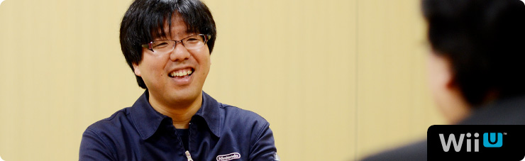 1. “共感ネットワーク” 2. ２階建てのサービス構造 3. ネットワーク方針の大転換 4. 「Wiiが街に」 岩田 “いろんな方たちに参加してもらうサービス” という点においては、『うごくメモ帳』（※17）という、 ひとつの例がありますよね。 このようなサービスもうまく運営できると、 これだけ長い間、活性を維持できることを 近藤さんたちが証明してくれました。 ※17 『うごくメモ帳』＝ニンテンドーDSi、DSi LLに内蔵されたタッチペンで手書きメモを作成できるソフト。何枚も書いたメモを再生して、パラパラマンガ（動画）をつくることもできる。また、インターネットに接続すれば、『うごくメモ帳』でつくった自分の「うごメモ」を公開したり、公開されているほかの人の「うごメモ」を観ることができる。 水木 世の中ではあまり知られてはいないようなんですが、 ユーザー数がずっと右肩上がりでしたよね。 岩田 それで『Miiverse』のサーバー開発をはじめるとき、 水木さんとふたりで、近藤さんに会いに行ったんですけど、 じつはふたつの理由がありました。 ひとつは『うごメモ』でおつき合いがあったこと。 もうひとつは以前、近藤さんから ネットワークサービスに対するご提案を いただいたことがあったからなんです。 その話は、水木さんの話とイコールではありませんでしたが、 内容には関連がありました。 ですから、「この開発をするなら、 以前、任天堂に提案をしてくれたはてなさんに、 まず最初に話を持っていかないといけない」と思って、 近藤さんにご相談に行ったわけです。 近藤 そうでしたね。 そもそもご提案した発端は『うごメモ』にあります。 「うごメモはてな」（※18）のサイトで 「★」をつけたり、コメント機能を追加したり（※19）することで、 アクティブなユーザーがどんどん増えていったんです。 それで気づいたのは、 ゲームをしている人も本当は、 「もっとコミュニケーションをとりたいんだ」 ということでした。 僕自身、子どものころに『マリオブラザーズ』（※20）で、 友達と協力しあって、敵を倒していたことが、 ゲームの楽しい原体験として残っていましたし。 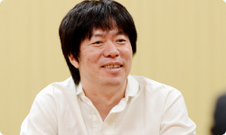 ※18 「うごメモはてな」＝『うごくメモ帳』で書かれた作品を、パソコンやニンテンドーDSiブラウザーなどから楽しめるＷｅｂサイト（２０１３年５月３１日をもってサービス終了）。 ※19 「★」をつけたり、コメント機能を追加したり＝投稿された「うごメモ」を閲覧し、気に入った作品に感想をコメントしたり、面白いと思った気持ちを「★」に変えて気軽に作者へ伝えることができる「うごメモはてな」のシステム。 ※20 『マリオブラザーズ』＝１９８３年、ファミコン用ソフトとして発売されたアクションゲーム。 岩田 ゲームを遊んでいる時間以外に、 友達とゲームについて語り合う時間も、 一連のゲーム体験の面白さの一部なんですよね。 近藤 はい。ゲームを媒介に 人と楽しんできたので、ネットを使えば、 「もっと世界中の人とつながって遊べるのでは？」 という気持ちがありました。 だからお話をいただいたときは、 「いよいよ、きたーっ！」って思いました（笑）。 岩田 （笑）。 水木さんが最初の打ち合わせで、 「近藤さんのお話がすごく勉強になった」 と言っていたことが印象的でしたけど、 とくにどんな話で共感したんですか？ 水木 まず「既存のネットワークサービスのコミュニティは面白い」 という話なんですけど、当時はまだ自分の中で、 「本当にコミュニティをメインに据えていいのかな？」 と、正直、自信がなかったんです。 でも、近藤さんの話を聞いて、確信が持てたんです。 近藤 あ、そうだったんですか。 水木 はい。もうひとつは、 ネットワークサービスの階層構造の話です。 既存のネットワークサービスが１階で、 ２階にオープンなサービスがある、ということで、 １階では「知り合いと安全なやりとりを提供しつつ」 ２階では「見知らぬ人と興味や共感でつながって交流できる」 というイメージを話されていて、 『Miiverse』がこれだけオープンな構造になったのは、 こうした打ち合わせでのインプットが大きかった気がします。 岩田 『Miiverse』も２階建てのサービス構造になっていて、 自分が心を許した人とだけやりとりできる部分と、 同じ興味を持つ、数多くの見知らぬ人と交流できる部分の、 両面があるんですよね。 水木 そうです。 岩田 近藤さんのお話の中で、わたしの印象に残っているのは、 「既存のネットワークサービスのソーシャルグラフ（※21）と、 ゲームのネットワークサービスのソーシャルグラフは、 別物ではないでしょうか？」という視点です。 「既存のサービスでつながっているリアルな人間関係の中で、 ゲームの話がしたいか？」といえば、 「必ずしもイコールとは限らない」というお話でした。 それはわたしの中で、ゼロから独自のソーシャルグラフを つくることを決心させる、大事な言葉でした。 ※21 ソーシャルグラフ＝ＳＮＳ（ソーシャル・ネットワーキング・サービス）などの、ソーシャルメディアにおけるＷｅｂ間での人間関係の相関関係や、そのつながりのこと。現実世界での、リアルな知人関係に基づく関係性を指す場合が多い。 近藤 そうだったんですね。 確かに、既存のネットワークサービスは、 リアルな部分もあるかもしれませんが、 日常って、知り合いじゃない人と接することも多いですよね。 同じ興味を持つ人と知り合うキッカケがあったり、 それについて語り合ったりすることが必要なんです。 水木 確かに “リアルソーシャルグラフ”って言葉を聞くと、 「現実の人間関係が全部入っている」 と思ってしまいますけど、よく考えたら “リアル”って、実際の知り合いだけじゃなく、 見知らぬ人とのやりとりは、現実世界でも多いですもんね。 近藤 ええ。あと、もうひとつ、 とくにアメリカのソーシャルネットワークは、 「人格がひとつじゃなきゃダメ」 みたいな概念がある気がするんですが、 実態は違いますよね？ 水木 ああ、確かに！ 岩田 アメリカ人の友達から聞いたことなんですが、 「ソーシャルネットワークの普及によって いつでも常に周りから見られてしまうので、 “自分はこういう人”っていう一貫性を持って生きていないと、 最近はプライベートタイムも気が抜けなくて大変なんだ」 と話していたことがあります。 その意味で、ソーシャルネットワークの普及で、 みんなが“可視化された世界”に生きているわけで、 便利な世の中になったけれども、 逆に窮屈さも生まれたのかもしれませんね。 水木 わかります。 つい「誕生日おめでとう！」とか、 さしさわりないコメントを書いてしまうとか（笑）。 近藤 そうそう（笑）。 でも友達と接している自分もいれば、 ゲームの中での自分もいて、 いろいろあって、いいと思うんです。 岩田 オンとオフのときでスイッチが切り替わって、 別の人格になっている人は、 いっぱいいるでしょうからね。 水木 その意味では 「ソーシャルネットワークは実名にしなきゃいけない」 という流れがあるなかで、『Miiverse』はそれにこだわらず、 Miiのニックネームを、そのまま表示できるようになっています。 岩田 はい。ただし、ごくわずかですけど、 匿名となると、行儀の悪くなってしまう人がいて、 コミュニティが破壊してしまうことがあります。 実名を使うっていうのは、 それにブレーキを踏むための手段のひとつですけど、 そもそも同じ“共感”で結ばれていたら、 実名かどうかは、あまり関係なくなる気がするんです。 「それぐらい共感で結ばれることは大事ではないか」 と思ったんです。 水木 はい。 岩田 それともうひとつ、わたしが宮本（茂）さんという マリオをつくった人と仕事をしてきて思ったことは、 「宮本さんは“人の共感を得ること”に対して、 とてつもない執念を発揮してものづくりをしている人だ」 と気づいたからなんです。だからこそ、 「『Miiverse』のテーマが“共感”であることは任天堂らしい」 と思ったんです。 水木 それで“共感ネットワーク”なんですね。 いま、その言葉の本当の意味がわかりました（笑）。 近藤 じつは僕もいま、 わかったことがあるんですけど（笑）。 『Miiverse』には、その人の発言に対して、 共感したらポチッと押すだけの 「共感ボタン」がついています。 それは“自分のコメントに対して共感してもらえる” という意味だけではなく、そもそもゲームに対して、 “いっしょに遊んだ人同士が、共感しあう”という “二重の共感”があるんですね。 岩田 そうです。共感しあえば、感想や意見を 交換しやすくなるし、交流が生まれれば、 ゲームがもっと面白くなるはずだし、 『Miiverse』で見知らぬ人との共感が増えれば、 自分に合ったゲームとの出会いのチャンスも広がるはずです。 まさにそこが、わたしがこの企画を進める 強い動機になっています。 水木 あの・・・正直に申しますと、“共感”について 僕も完全に理解していたわけじゃありませんでした。 でもその“共感”というキーワードを元に、 仕様を考えていくことができたんです。 少なくとも“ソーシャル”というキーワードだけだと、 ネットワークの階層構造の１階を 整備することに一生懸命になって、 いまとは違うサービスになっていたかもしれません。 でも“共感”は見知らぬ人同士がつながりあうことだから、 「２階をつくろう」という意識が生まれたんだと思います。 1. “共感ネットワーク” 3. ネットワーク方針の大転換
ZombiU（ゾンビU） 篇 Nintendo×JOYSOUND Wii カラオケ U 篇 Nintendo Land 篇 Nintendo TVii 篇 Wii Street U powered by Google 篇 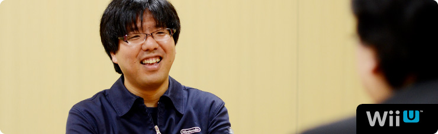 1. “共感ネットワーク” 2. ２階建てのサービス構造 3. ネットワーク方針の大転換 4. 「Wiiが街に」 岩田 “いろんな方たちに参加してもらうサービス” という点においては、『うごくメモ帳』（※17）という、 ひとつの例がありますよね。 このようなサービスもうまく運営できると、 これだけ長い間、活性を維持できることを 近藤さんたちが証明してくれました。 ※17 『うごくメモ帳』＝ニンテンドーDSi、DSi LLに内蔵されたタッチペンで手書きメモを作成できるソフト。何枚も書いたメモを再生して、パラパラマンガ（動画）をつくることもできる。また、インターネットに接続すれば、『うごくメモ帳』でつくった自分の「うごメモ」を公開したり、公開されているほかの人の「うごメモ」を観ることができる。 水木 世の中ではあまり知られてはいないようなんですが、 ユーザー数がずっと右肩上がりでしたよね。 岩田 それで『Miiverse』のサーバー開発をはじめるとき、 水木さんとふたりで、近藤さんに会いに行ったんですけど、 じつはふたつの理由がありました。 ひとつは『うごメモ』でおつき合いがあったこと。 もうひとつは以前、近藤さんから ネットワークサービスに対するご提案を いただいたことがあったからなんです。 その話は、水木さんの話とイコールではありませんでしたが、 内容には関連がありました。 ですから、「この開発をするなら、 以前、任天堂に提案をしてくれたはてなさんに、 まず最初に話を持っていかないといけない」と思って、 近藤さんにご相談に行ったわけです。 近藤 そうでしたね。 そもそもご提案した発端は『うごメモ』にあります。 「うごメモはてな」（※18）のサイトで 「★」をつけたり、コメント機能を追加したり（※19）することで、 アクティブなユーザーがどんどん増えていったんです。 それで気づいたのは、 ゲームをしている人も本当は、 「もっとコミュニケーションをとりたいんだ」 ということでした。 僕自身、子どものころに『マリオブラザーズ』（※20）で、 友達と協力しあって、敵を倒していたことが、 ゲームの楽しい原体験として残っていましたし。 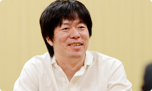 ※18 「うごメモはてな」＝『うごくメモ帳』で書かれた作品を、パソコンやニンテンドーDSiブラウザーなどから楽しめるＷｅｂサイト（２０１３年５月３１日をもってサービス終了）。 ※19 「★」をつけたり、コメント機能を追加したり＝投稿された「うごメモ」を閲覧し、気に入った作品に感想をコメントしたり、面白いと思った気持ちを「★」に変えて気軽に作者へ伝えることができる「うごメモはてな」のシステム。 ※20 『マリオブラザーズ』＝１９８３年、ファミコン用ソフトとして発売されたアクションゲーム。 岩田 ゲームを遊んでいる時間以外に、 友達とゲームについて語り合う時間も、 一連のゲーム体験の面白さの一部なんですよね。 近藤 はい。ゲームを媒介に 人と楽しんできたので、ネットを使えば、 「もっと世界中の人とつながって遊べるのでは？」 という気持ちがありました。 だからお話をいただいたときは、 「いよいよ、きたーっ！」って思いました（笑）。 岩田 （笑）。 水木さんが最初の打ち合わせで、 「近藤さんのお話がすごく勉強になった」 と言っていたことが印象的でしたけど、 とくにどんな話で共感したんですか？ 水木 まず「既存のネットワークサービスのコミュニティは面白い」 という話なんですけど、当時はまだ自分の中で、 「本当にコミュニティをメインに据えていいのかな？」 と、正直、自信がなかったんです。 でも、近藤さんの話を聞いて、確信が持てたんです。 近藤 あ、そうだったんですか。 水木 はい。もうひとつは、 ネットワークサービスの階層構造の話です。 既存のネットワークサービスが１階で、 ２階にオープンなサービスがある、ということで、 １階では「知り合いと安全なやりとりを提供しつつ」 ２階では「見知らぬ人と興味や共感でつながって交流できる」 というイメージを話されていて、 『Miiverse』がこれだけオープンな構造になったのは、 こうした打ち合わせでのインプットが大きかった気がします。 岩田 『Miiverse』も２階建てのサービス構造になっていて、 自分が心を許した人とだけやりとりできる部分と、 同じ興味を持つ、数多くの見知らぬ人と交流できる部分の、 両面があるんですよね。 水木 そうです。 岩田 近藤さんのお話の中で、わたしの印象に残っているのは、 「既存のネットワークサービスのソーシャルグラフ（※21）と、 ゲームのネットワークサービスのソーシャルグラフは、 別物ではないでしょうか？」という視点です。 「既存のサービスでつながっているリアルな人間関係の中で、 ゲームの話がしたいか？」といえば、 「必ずしもイコールとは限らない」というお話でした。 それはわたしの中で、ゼロから独自のソーシャルグラフを つくることを決心させる、大事な言葉でした。 ※21 ソーシャルグラフ＝ＳＮＳ（ソーシャル・ネットワーキング・サービス）などの、ソーシャルメディアにおけるＷｅｂ間での人間関係の相関関係や、そのつながりのこと。現実世界での、リアルな知人関係に基づく関係性を指す場合が多い。 近藤 そうだったんですね。 確かに、既存のネットワークサービスは、 リアルな部分もあるかもしれませんが、 日常って、知り合いじゃない人と接することも多いですよね。 同じ興味を持つ人と知り合うキッカケがあったり、 それについて語り合ったりすることが必要なんです。 水木 確かに “リアルソーシャルグラフ”って言葉を聞くと、 「現実の人間関係が全部入っている」 と思ってしまいますけど、よく考えたら “リアル”って、実際の知り合いだけじゃなく、 見知らぬ人とのやりとりは、現実世界でも多いですもんね。 近藤 ええ。あと、もうひとつ、 とくにアメリカのソーシャルネットワークは、 「人格がひとつじゃなきゃダメ」 みたいな概念がある気がするんですが、 実態は違いますよね？ 水木 ああ、確かに！ 岩田 アメリカ人の友達から聞いたことなんですが、 「ソーシャルネットワークの普及によって いつでも常に周りから見られてしまうので、 “自分はこういう人”っていう一貫性を持って生きていないと、 最近はプライベートタイムも気が抜けなくて大変なんだ」 と話していたことがあります。 その意味で、ソーシャルネットワークの普及で、 みんなが“可視化された世界”に生きているわけで、 便利な世の中になったけれども、 逆に窮屈さも生まれたのかもしれませんね。 水木 わかります。 つい「誕生日おめでとう！」とか、 さしさわりないコメントを書いてしまうとか（笑）。 近藤 そうそう（笑）。 でも友達と接している自分もいれば、 ゲームの中での自分もいて、 いろいろあって、いいと思うんです。 岩田 オンとオフのときでスイッチが切り替わって、 別の人格になっている人は、 いっぱいいるでしょうからね。 水木 その意味では 「ソーシャルネットワークは実名にしなきゃいけない」 という流れがあるなかで、『Miiverse』はそれにこだわらず、 Miiのニックネームを、そのまま表示できるようになっています。 岩田 はい。ただし、ごくわずかですけど、 匿名となると、行儀の悪くなってしまう人がいて、 コミュニティが破壊してしまうことがあります。 実名を使うっていうのは、 それにブレーキを踏むための手段のひとつですけど、 そもそも同じ“共感”で結ばれていたら、 実名かどうかは、あまり関係なくなる気がするんです。 「それぐらい共感で結ばれることは大事ではないか」 と思ったんです。 水木 はい。 岩田 それともうひとつ、わたしが宮本（茂）さんという マリオをつくった人と仕事をしてきて思ったことは、 「宮本さんは“人の共感を得ること”に対して、 とてつもない執念を発揮してものづくりをしている人だ」 と気づいたからなんです。だからこそ、 「『Miiverse』のテーマが“共感”であることは任天堂らしい」 と思ったんです。 水木 それで“共感ネットワーク”なんですね。 いま、その言葉の本当の意味がわかりました（笑）。 近藤 じつは僕もいま、 わかったことがあるんですけど（笑）。 『Miiverse』には、その人の発言に対して、 共感したらポチッと押すだけの 「共感ボタン」がついています。 それは“自分のコメントに対して共感してもらえる” という意味だけではなく、そもそもゲームに対して、 “いっしょに遊んだ人同士が、共感しあう”という “二重の共感”があるんですね。 岩田 そうです。共感しあえば、感想や意見を 交換しやすくなるし、交流が生まれれば、 ゲームがもっと面白くなるはずだし、 『Miiverse』で見知らぬ人との共感が増えれば、 自分に合ったゲームとの出会いのチャンスも広がるはずです。 まさにそこが、わたしがこの企画を進める 強い動機になっています。 水木 あの・・・正直に申しますと、“共感”について 僕も完全に理解していたわけじゃありませんでした。 でもその“共感”というキーワードを元に、 仕様を考えていくことができたんです。 少なくとも“ソーシャル”というキーワードだけだと、 ネットワークの階層構造の１階を 整備することに一生懸命になって、 いまとは違うサービスになっていたかもしれません。 でも“共感”は見知らぬ人同士がつながりあうことだから、 「２階をつくろう」という意識が生まれたんだと思います。 1. “共感ネットワーク” 3. ネットワーク方針の大転換
Nintendo×JOYSOUND Wii カラオケ U 篇 Nintendo Land 篇 Nintendo TVii 篇 Wii Street U powered by Google 篇 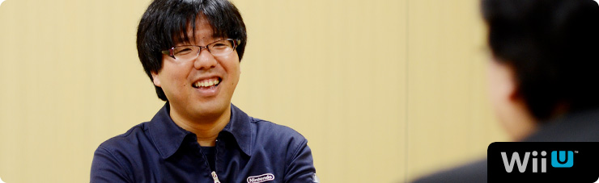 1. “共感ネットワーク” 2. ２階建てのサービス構造 3. ネットワーク方針の大転換 4. 「Wiiが街に」 岩田 “いろんな方たちに参加してもらうサービス” という点においては、『うごくメモ帳』（※17）という、 ひとつの例がありますよね。 このようなサービスもうまく運営できると、 これだけ長い間、活性を維持できることを 近藤さんたちが証明してくれました。 ※17 『うごくメモ帳』＝ニンテンドーDSi、DSi LLに内蔵されたタッチペンで手書きメモを作成できるソフト。何枚も書いたメモを再生して、パラパラマンガ（動画）をつくることもできる。また、インターネットに接続すれば、『うごくメモ帳』でつくった自分の「うごメモ」を公開したり、公開されているほかの人の「うごメモ」を観ることができる。 水木 世の中ではあまり知られてはいないようなんですが、 ユーザー数がずっと右肩上がりでしたよね。 岩田 それで『Miiverse』のサーバー開発をはじめるとき、 水木さんとふたりで、近藤さんに会いに行ったんですけど、 じつはふたつの理由がありました。 ひとつは『うごメモ』でおつき合いがあったこと。 もうひとつは以前、近藤さんから ネットワークサービスに対するご提案を いただいたことがあったからなんです。 その話は、水木さんの話とイコールではありませんでしたが、 内容には関連がありました。 ですから、「この開発をするなら、 以前、任天堂に提案をしてくれたはてなさんに、 まず最初に話を持っていかないといけない」と思って、 近藤さんにご相談に行ったわけです。 近藤 そうでしたね。 そもそもご提案した発端は『うごメモ』にあります。 「うごメモはてな」（※18）のサイトで 「★」をつけたり、コメント機能を追加したり（※19）することで、 アクティブなユーザーがどんどん増えていったんです。 それで気づいたのは、 ゲームをしている人も本当は、 「もっとコミュニケーションをとりたいんだ」 ということでした。 僕自身、子どものころに『マリオブラザーズ』（※20）で、 友達と協力しあって、敵を倒していたことが、 ゲームの楽しい原体験として残っていましたし。 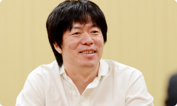 ※18 「うごメモはてな」＝『うごくメモ帳』で書かれた作品を、パソコンやニンテンドーDSiブラウザーなどから楽しめるＷｅｂサイト（２０１３年５月３１日をもってサービス終了）。 ※19 「★」をつけたり、コメント機能を追加したり＝投稿された「うごメモ」を閲覧し、気に入った作品に感想をコメントしたり、面白いと思った気持ちを「★」に変えて気軽に作者へ伝えることができる「うごメモはてな」のシステム。 ※20 『マリオブラザーズ』＝１９８３年、ファミコン用ソフトとして発売されたアクションゲーム。 岩田 ゲームを遊んでいる時間以外に、 友達とゲームについて語り合う時間も、 一連のゲーム体験の面白さの一部なんですよね。 近藤 はい。ゲームを媒介に 人と楽しんできたので、ネットを使えば、 「もっと世界中の人とつながって遊べるのでは？」 という気持ちがありました。 だからお話をいただいたときは、 「いよいよ、きたーっ！」って思いました（笑）。 岩田 （笑）。 水木さんが最初の打ち合わせで、 「近藤さんのお話がすごく勉強になった」 と言っていたことが印象的でしたけど、 とくにどんな話で共感したんですか？ 水木 まず「既存のネットワークサービスのコミュニティは面白い」 という話なんですけど、当時はまだ自分の中で、 「本当にコミュニティをメインに据えていいのかな？」 と、正直、自信がなかったんです。 でも、近藤さんの話を聞いて、確信が持てたんです。 近藤 あ、そうだったんですか。 水木 はい。もうひとつは、 ネットワークサービスの階層構造の話です。 既存のネットワークサービスが１階で、 ２階にオープンなサービスがある、ということで、 １階では「知り合いと安全なやりとりを提供しつつ」 ２階では「見知らぬ人と興味や共感でつながって交流できる」 というイメージを話されていて、 『Miiverse』がこれだけオープンな構造になったのは、 こうした打ち合わせでのインプットが大きかった気がします。 岩田 『Miiverse』も２階建てのサービス構造になっていて、 自分が心を許した人とだけやりとりできる部分と、 同じ興味を持つ、数多くの見知らぬ人と交流できる部分の、 両面があるんですよね。 水木 そうです。 岩田 近藤さんのお話の中で、わたしの印象に残っているのは、 「既存のネットワークサービスのソーシャルグラフ（※21）と、 ゲームのネットワークサービスのソーシャルグラフは、 別物ではないでしょうか？」という視点です。 「既存のサービスでつながっているリアルな人間関係の中で、 ゲームの話がしたいか？」といえば、 「必ずしもイコールとは限らない」というお話でした。 それはわたしの中で、ゼロから独自のソーシャルグラフを つくることを決心させる、大事な言葉でした。 ※21 ソーシャルグラフ＝ＳＮＳ（ソーシャル・ネットワーキング・サービス）などの、ソーシャルメディアにおけるＷｅｂ間での人間関係の相関関係や、そのつながりのこと。現実世界での、リアルな知人関係に基づく関係性を指す場合が多い。 近藤 そうだったんですね。 確かに、既存のネットワークサービスは、 リアルな部分もあるかもしれませんが、 日常って、知り合いじゃない人と接することも多いですよね。 同じ興味を持つ人と知り合うキッカケがあったり、 それについて語り合ったりすることが必要なんです。 水木 確かに “リアルソーシャルグラフ”って言葉を聞くと、 「現実の人間関係が全部入っている」 と思ってしまいますけど、よく考えたら “リアル”って、実際の知り合いだけじゃなく、 見知らぬ人とのやりとりは、現実世界でも多いですもんね。 近藤 ええ。あと、もうひとつ、 とくにアメリカのソーシャルネットワークは、 「人格がひとつじゃなきゃダメ」 みたいな概念がある気がするんですが、 実態は違いますよね？ 水木 ああ、確かに！ 岩田 アメリカ人の友達から聞いたことなんですが、 「ソーシャルネットワークの普及によって いつでも常に周りから見られてしまうので、 “自分はこういう人”っていう一貫性を持って生きていないと、 最近はプライベートタイムも気が抜けなくて大変なんだ」 と話していたことがあります。 その意味で、ソーシャルネットワークの普及で、 みんなが“可視化された世界”に生きているわけで、 便利な世の中になったけれども、 逆に窮屈さも生まれたのかもしれませんね。 水木 わかります。 つい「誕生日おめでとう！」とか、 さしさわりないコメントを書いてしまうとか（笑）。 近藤 そうそう（笑）。 でも友達と接している自分もいれば、 ゲームの中での自分もいて、 いろいろあって、いいと思うんです。 岩田 オンとオフのときでスイッチが切り替わって、 別の人格になっている人は、 いっぱいいるでしょうからね。 水木 その意味では 「ソーシャルネットワークは実名にしなきゃいけない」 という流れがあるなかで、『Miiverse』はそれにこだわらず、 Miiのニックネームを、そのまま表示できるようになっています。 岩田 はい。ただし、ごくわずかですけど、 匿名となると、行儀の悪くなってしまう人がいて、 コミュニティが破壊してしまうことがあります。 実名を使うっていうのは、 それにブレーキを踏むための手段のひとつですけど、 そもそも同じ“共感”で結ばれていたら、 実名かどうかは、あまり関係なくなる気がするんです。 「それぐらい共感で結ばれることは大事ではないか」 と思ったんです。 水木 はい。 岩田 それともうひとつ、わたしが宮本（茂）さんという マリオをつくった人と仕事をしてきて思ったことは、 「宮本さんは“人の共感を得ること”に対して、 とてつもない執念を発揮してものづくりをしている人だ」 と気づいたからなんです。だからこそ、 「『Miiverse』のテーマが“共感”であることは任天堂らしい」 と思ったんです。 水木 それで“共感ネットワーク”なんですね。 いま、その言葉の本当の意味がわかりました（笑）。 近藤 じつは僕もいま、 わかったことがあるんですけど（笑）。 『Miiverse』には、その人の発言に対して、 共感したらポチッと押すだけの 「共感ボタン」がついています。 それは“自分のコメントに対して共感してもらえる” という意味だけではなく、そもそもゲームに対して、 “いっしょに遊んだ人同士が、共感しあう”という “二重の共感”があるんですね。 岩田 そうです。共感しあえば、感想や意見を 交換しやすくなるし、交流が生まれれば、 ゲームがもっと面白くなるはずだし、 『Miiverse』で見知らぬ人との共感が増えれば、 自分に合ったゲームとの出会いのチャンスも広がるはずです。 まさにそこが、わたしがこの企画を進める 強い動機になっています。 水木 あの・・・正直に申しますと、“共感”について 僕も完全に理解していたわけじゃありませんでした。 でもその“共感”というキーワードを元に、 仕様を考えていくことができたんです。 少なくとも“ソーシャル”というキーワードだけだと、 ネットワークの階層構造の１階を 整備することに一生懸命になって、 いまとは違うサービスになっていたかもしれません。 でも“共感”は見知らぬ人同士がつながりあうことだから、 「２階をつくろう」という意識が生まれたんだと思います。 1. “共感ネットワーク” 3. ネットワーク方針の大転換
Nintendo Land 篇 Nintendo TVii 篇 Wii Street U powered by Google 篇 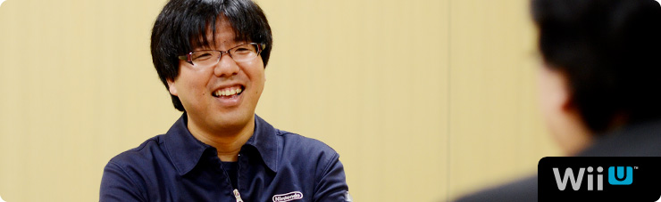 1. “共感ネットワーク” 2. ２階建てのサービス構造 3. ネットワーク方針の大転換 4. 「Wiiが街に」 岩田 “いろんな方たちに参加してもらうサービス” という点においては、『うごくメモ帳』（※17）という、 ひとつの例がありますよね。 このようなサービスもうまく運営できると、 これだけ長い間、活性を維持できることを 近藤さんたちが証明してくれました。 ※17 『うごくメモ帳』＝ニンテンドーDSi、DSi LLに内蔵されたタッチペンで手書きメモを作成できるソフト。何枚も書いたメモを再生して、パラパラマンガ（動画）をつくることもできる。また、インターネットに接続すれば、『うごくメモ帳』でつくった自分の「うごメモ」を公開したり、公開されているほかの人の「うごメモ」を観ることができる。 水木 世の中ではあまり知られてはいないようなんですが、 ユーザー数がずっと右肩上がりでしたよね。 岩田 それで『Miiverse』のサーバー開発をはじめるとき、 水木さんとふたりで、近藤さんに会いに行ったんですけど、 じつはふたつの理由がありました。 ひとつは『うごメモ』でおつき合いがあったこと。 もうひとつは以前、近藤さんから ネットワークサービスに対するご提案を いただいたことがあったからなんです。 その話は、水木さんの話とイコールではありませんでしたが、 内容には関連がありました。 ですから、「この開発をするなら、 以前、任天堂に提案をしてくれたはてなさんに、 まず最初に話を持っていかないといけない」と思って、 近藤さんにご相談に行ったわけです。 近藤 そうでしたね。 そもそもご提案した発端は『うごメモ』にあります。 「うごメモはてな」（※18）のサイトで 「★」をつけたり、コメント機能を追加したり（※19）することで、 アクティブなユーザーがどんどん増えていったんです。 それで気づいたのは、 ゲームをしている人も本当は、 「もっとコミュニケーションをとりたいんだ」 ということでした。 僕自身、子どものころに『マリオブラザーズ』（※20）で、 友達と協力しあって、敵を倒していたことが、 ゲームの楽しい原体験として残っていましたし。 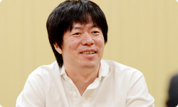 ※18 「うごメモはてな」＝『うごくメモ帳』で書かれた作品を、パソコンやニンテンドーDSiブラウザーなどから楽しめるＷｅｂサイト（２０１３年５月３１日をもってサービス終了）。 ※19 「★」をつけたり、コメント機能を追加したり＝投稿された「うごメモ」を閲覧し、気に入った作品に感想をコメントしたり、面白いと思った気持ちを「★」に変えて気軽に作者へ伝えることができる「うごメモはてな」のシステム。 ※20 『マリオブラザーズ』＝１９８３年、ファミコン用ソフトとして発売されたアクションゲーム。 岩田 ゲームを遊んでいる時間以外に、 友達とゲームについて語り合う時間も、 一連のゲーム体験の面白さの一部なんですよね。 近藤 はい。ゲームを媒介に 人と楽しんできたので、ネットを使えば、 「もっと世界中の人とつながって遊べるのでは？」 という気持ちがありました。 だからお話をいただいたときは、 「いよいよ、きたーっ！」って思いました（笑）。 岩田 （笑）。 水木さんが最初の打ち合わせで、 「近藤さんのお話がすごく勉強になった」 と言っていたことが印象的でしたけど、 とくにどんな話で共感したんですか？ 水木 まず「既存のネットワークサービスのコミュニティは面白い」 という話なんですけど、当時はまだ自分の中で、 「本当にコミュニティをメインに据えていいのかな？」 と、正直、自信がなかったんです。 でも、近藤さんの話を聞いて、確信が持てたんです。 近藤 あ、そうだったんですか。 水木 はい。もうひとつは、 ネットワークサービスの階層構造の話です。 既存のネットワークサービスが１階で、 ２階にオープンなサービスがある、ということで、 １階では「知り合いと安全なやりとりを提供しつつ」 ２階では「見知らぬ人と興味や共感でつながって交流できる」 というイメージを話されていて、 『Miiverse』がこれだけオープンな構造になったのは、 こうした打ち合わせでのインプットが大きかった気がします。 岩田 『Miiverse』も２階建てのサービス構造になっていて、 自分が心を許した人とだけやりとりできる部分と、 同じ興味を持つ、数多くの見知らぬ人と交流できる部分の、 両面があるんですよね。 水木 そうです。 岩田 近藤さんのお話の中で、わたしの印象に残っているのは、 「既存のネットワークサービスのソーシャルグラフ（※21）と、 ゲームのネットワークサービスのソーシャルグラフは、 別物ではないでしょうか？」という視点です。 「既存のサービスでつながっているリアルな人間関係の中で、 ゲームの話がしたいか？」といえば、 「必ずしもイコールとは限らない」というお話でした。 それはわたしの中で、ゼロから独自のソーシャルグラフを つくることを決心させる、大事な言葉でした。 ※21 ソーシャルグラフ＝ＳＮＳ（ソーシャル・ネットワーキング・サービス）などの、ソーシャルメディアにおけるＷｅｂ間での人間関係の相関関係や、そのつながりのこと。現実世界での、リアルな知人関係に基づく関係性を指す場合が多い。 近藤 そうだったんですね。 確かに、既存のネットワークサービスは、 リアルな部分もあるかもしれませんが、 日常って、知り合いじゃない人と接することも多いですよね。 同じ興味を持つ人と知り合うキッカケがあったり、 それについて語り合ったりすることが必要なんです。 水木 確かに “リアルソーシャルグラフ”って言葉を聞くと、 「現実の人間関係が全部入っている」 と思ってしまいますけど、よく考えたら “リアル”って、実際の知り合いだけじゃなく、 見知らぬ人とのやりとりは、現実世界でも多いですもんね。 近藤 ええ。あと、もうひとつ、 とくにアメリカのソーシャルネットワークは、 「人格がひとつじゃなきゃダメ」 みたいな概念がある気がするんですが、 実態は違いますよね？ 水木 ああ、確かに！ 岩田 アメリカ人の友達から聞いたことなんですが、 「ソーシャルネットワークの普及によって いつでも常に周りから見られてしまうので、 “自分はこういう人”っていう一貫性を持って生きていないと、 最近はプライベートタイムも気が抜けなくて大変なんだ」 と話していたことがあります。 その意味で、ソーシャルネットワークの普及で、 みんなが“可視化された世界”に生きているわけで、 便利な世の中になったけれども、 逆に窮屈さも生まれたのかもしれませんね。 水木 わかります。 つい「誕生日おめでとう！」とか、 さしさわりないコメントを書いてしまうとか（笑）。 近藤 そうそう（笑）。 でも友達と接している自分もいれば、 ゲームの中での自分もいて、 いろいろあって、いいと思うんです。 岩田 オンとオフのときでスイッチが切り替わって、 別の人格になっている人は、 いっぱいいるでしょうからね。 水木 その意味では 「ソーシャルネットワークは実名にしなきゃいけない」 という流れがあるなかで、『Miiverse』はそれにこだわらず、 Miiのニックネームを、そのまま表示できるようになっています。 岩田 はい。ただし、ごくわずかですけど、 匿名となると、行儀の悪くなってしまう人がいて、 コミュニティが破壊してしまうことがあります。 実名を使うっていうのは、 それにブレーキを踏むための手段のひとつですけど、 そもそも同じ“共感”で結ばれていたら、 実名かどうかは、あまり関係なくなる気がするんです。 「それぐらい共感で結ばれることは大事ではないか」 と思ったんです。 水木 はい。 岩田 それともうひとつ、わたしが宮本（茂）さんという マリオをつくった人と仕事をしてきて思ったことは、 「宮本さんは“人の共感を得ること”に対して、 とてつもない執念を発揮してものづくりをしている人だ」 と気づいたからなんです。だからこそ、 「『Miiverse』のテーマが“共感”であることは任天堂らしい」 と思ったんです。 水木 それで“共感ネットワーク”なんですね。 いま、その言葉の本当の意味がわかりました（笑）。 近藤 じつは僕もいま、 わかったことがあるんですけど（笑）。 『Miiverse』には、その人の発言に対して、 共感したらポチッと押すだけの 「共感ボタン」がついています。 それは“自分のコメントに対して共感してもらえる” という意味だけではなく、そもそもゲームに対して、 “いっしょに遊んだ人同士が、共感しあう”という “二重の共感”があるんですね。 岩田 そうです。共感しあえば、感想や意見を 交換しやすくなるし、交流が生まれれば、 ゲームがもっと面白くなるはずだし、 『Miiverse』で見知らぬ人との共感が増えれば、 自分に合ったゲームとの出会いのチャンスも広がるはずです。 まさにそこが、わたしがこの企画を進める 強い動機になっています。 水木 あの・・・正直に申しますと、“共感”について 僕も完全に理解していたわけじゃありませんでした。 でもその“共感”というキーワードを元に、 仕様を考えていくことができたんです。 少なくとも“ソーシャル”というキーワードだけだと、 ネットワークの階層構造の１階を 整備することに一生懸命になって、 いまとは違うサービスになっていたかもしれません。 でも“共感”は見知らぬ人同士がつながりあうことだから、 「２階をつくろう」という意識が生まれたんだと思います。 1. “共感ネットワーク” 3. ネットワーク方針の大転換
Nintendo TVii 篇 Wii Street U powered by Google 篇 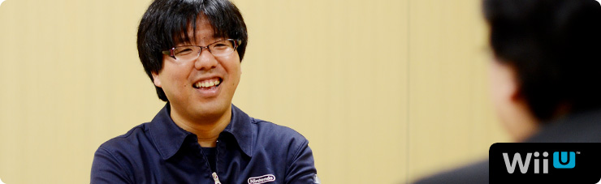 1. “共感ネットワーク” 2. ２階建てのサービス構造 3. ネットワーク方針の大転換 4. 「Wiiが街に」 岩田 “いろんな方たちに参加してもらうサービス” という点においては、『うごくメモ帳』（※17）という、 ひとつの例がありますよね。 このようなサービスもうまく運営できると、 これだけ長い間、活性を維持できることを 近藤さんたちが証明してくれました。 ※17 『うごくメモ帳』＝ニンテンドーDSi、DSi LLに内蔵されたタッチペンで手書きメモを作成できるソフト。何枚も書いたメモを再生して、パラパラマンガ（動画）をつくることもできる。また、インターネットに接続すれば、『うごくメモ帳』でつくった自分の「うごメモ」を公開したり、公開されているほかの人の「うごメモ」を観ることができる。 水木 世の中ではあまり知られてはいないようなんですが、 ユーザー数がずっと右肩上がりでしたよね。 岩田 それで『Miiverse』のサーバー開発をはじめるとき、 水木さんとふたりで、近藤さんに会いに行ったんですけど、 じつはふたつの理由がありました。 ひとつは『うごメモ』でおつき合いがあったこと。 もうひとつは以前、近藤さんから ネットワークサービスに対するご提案を いただいたことがあったからなんです。 その話は、水木さんの話とイコールではありませんでしたが、 内容には関連がありました。 ですから、「この開発をするなら、 以前、任天堂に提案をしてくれたはてなさんに、 まず最初に話を持っていかないといけない」と思って、 近藤さんにご相談に行ったわけです。 近藤 そうでしたね。 そもそもご提案した発端は『うごメモ』にあります。 「うごメモはてな」（※18）のサイトで 「★」をつけたり、コメント機能を追加したり（※19）することで、 アクティブなユーザーがどんどん増えていったんです。 それで気づいたのは、 ゲームをしている人も本当は、 「もっとコミュニケーションをとりたいんだ」 ということでした。 僕自身、子どものころに『マリオブラザーズ』（※20）で、 友達と協力しあって、敵を倒していたことが、 ゲームの楽しい原体験として残っていましたし。 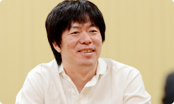 ※18 「うごメモはてな」＝『うごくメモ帳』で書かれた作品を、パソコンやニンテンドーDSiブラウザーなどから楽しめるＷｅｂサイト（２０１３年５月３１日をもってサービス終了）。 ※19 「★」をつけたり、コメント機能を追加したり＝投稿された「うごメモ」を閲覧し、気に入った作品に感想をコメントしたり、面白いと思った気持ちを「★」に変えて気軽に作者へ伝えることができる「うごメモはてな」のシステム。 ※20 『マリオブラザーズ』＝１９８３年、ファミコン用ソフトとして発売されたアクションゲーム。 岩田 ゲームを遊んでいる時間以外に、 友達とゲームについて語り合う時間も、 一連のゲーム体験の面白さの一部なんですよね。 近藤 はい。ゲームを媒介に 人と楽しんできたので、ネットを使えば、 「もっと世界中の人とつながって遊べるのでは？」 という気持ちがありました。 だからお話をいただいたときは、 「いよいよ、きたーっ！」って思いました（笑）。 岩田 （笑）。 水木さんが最初の打ち合わせで、 「近藤さんのお話がすごく勉強になった」 と言っていたことが印象的でしたけど、 とくにどんな話で共感したんですか？ 水木 まず「既存のネットワークサービスのコミュニティは面白い」 という話なんですけど、当時はまだ自分の中で、 「本当にコミュニティをメインに据えていいのかな？」 と、正直、自信がなかったんです。 でも、近藤さんの話を聞いて、確信が持てたんです。 近藤 あ、そうだったんですか。 水木 はい。もうひとつは、 ネットワークサービスの階層構造の話です。 既存のネットワークサービスが１階で、 ２階にオープンなサービスがある、ということで、 １階では「知り合いと安全なやりとりを提供しつつ」 ２階では「見知らぬ人と興味や共感でつながって交流できる」 というイメージを話されていて、 『Miiverse』がこれだけオープンな構造になったのは、 こうした打ち合わせでのインプットが大きかった気がします。 岩田 『Miiverse』も２階建てのサービス構造になっていて、 自分が心を許した人とだけやりとりできる部分と、 同じ興味を持つ、数多くの見知らぬ人と交流できる部分の、 両面があるんですよね。 水木 そうです。 岩田 近藤さんのお話の中で、わたしの印象に残っているのは、 「既存のネットワークサービスのソーシャルグラフ（※21）と、 ゲームのネットワークサービスのソーシャルグラフは、 別物ではないでしょうか？」という視点です。 「既存のサービスでつながっているリアルな人間関係の中で、 ゲームの話がしたいか？」といえば、 「必ずしもイコールとは限らない」というお話でした。 それはわたしの中で、ゼロから独自のソーシャルグラフを つくることを決心させる、大事な言葉でした。 ※21 ソーシャルグラフ＝ＳＮＳ（ソーシャル・ネットワーキング・サービス）などの、ソーシャルメディアにおけるＷｅｂ間での人間関係の相関関係や、そのつながりのこと。現実世界での、リアルな知人関係に基づく関係性を指す場合が多い。 近藤 そうだったんですね。 確かに、既存のネットワークサービスは、 リアルな部分もあるかもしれませんが、 日常って、知り合いじゃない人と接することも多いですよね。 同じ興味を持つ人と知り合うキッカケがあったり、 それについて語り合ったりすることが必要なんです。 水木 確かに “リアルソーシャルグラフ”って言葉を聞くと、 「現実の人間関係が全部入っている」 と思ってしまいますけど、よく考えたら “リアル”って、実際の知り合いだけじゃなく、 見知らぬ人とのやりとりは、現実世界でも多いですもんね。 近藤 ええ。あと、もうひとつ、 とくにアメリカのソーシャルネットワークは、 「人格がひとつじゃなきゃダメ」 みたいな概念がある気がするんですが、 実態は違いますよね？ 水木 ああ、確かに！ 岩田 アメリカ人の友達から聞いたことなんですが、 「ソーシャルネットワークの普及によって いつでも常に周りから見られてしまうので、 “自分はこういう人”っていう一貫性を持って生きていないと、 最近はプライベートタイムも気が抜けなくて大変なんだ」 と話していたことがあります。 その意味で、ソーシャルネットワークの普及で、 みんなが“可視化された世界”に生きているわけで、 便利な世の中になったけれども、 逆に窮屈さも生まれたのかもしれませんね。 水木 わかります。 つい「誕生日おめでとう！」とか、 さしさわりないコメントを書いてしまうとか（笑）。 近藤 そうそう（笑）。 でも友達と接している自分もいれば、 ゲームの中での自分もいて、 いろいろあって、いいと思うんです。 岩田 オンとオフのときでスイッチが切り替わって、 別の人格になっている人は、 いっぱいいるでしょうからね。 水木 その意味では 「ソーシャルネットワークは実名にしなきゃいけない」 という流れがあるなかで、『Miiverse』はそれにこだわらず、 Miiのニックネームを、そのまま表示できるようになっています。 岩田 はい。ただし、ごくわずかですけど、 匿名となると、行儀の悪くなってしまう人がいて、 コミュニティが破壊してしまうことがあります。 実名を使うっていうのは、 それにブレーキを踏むための手段のひとつですけど、 そもそも同じ“共感”で結ばれていたら、 実名かどうかは、あまり関係なくなる気がするんです。 「それぐらい共感で結ばれることは大事ではないか」 と思ったんです。 水木 はい。 岩田 それともうひとつ、わたしが宮本（茂）さんという マリオをつくった人と仕事をしてきて思ったことは、 「宮本さんは“人の共感を得ること”に対して、 とてつもない執念を発揮してものづくりをしている人だ」 と気づいたからなんです。だからこそ、 「『Miiverse』のテーマが“共感”であることは任天堂らしい」 と思ったんです。 水木 それで“共感ネットワーク”なんですね。 いま、その言葉の本当の意味がわかりました（笑）。 近藤 じつは僕もいま、 わかったことがあるんですけど（笑）。 『Miiverse』には、その人の発言に対して、 共感したらポチッと押すだけの 「共感ボタン」がついています。 それは“自分のコメントに対して共感してもらえる” という意味だけではなく、そもそもゲームに対して、 “いっしょに遊んだ人同士が、共感しあう”という “二重の共感”があるんですね。 岩田 そうです。共感しあえば、感想や意見を 交換しやすくなるし、交流が生まれれば、 ゲームがもっと面白くなるはずだし、 『Miiverse』で見知らぬ人との共感が増えれば、 自分に合ったゲームとの出会いのチャンスも広がるはずです。 まさにそこが、わたしがこの企画を進める 強い動機になっています。 水木 あの・・・正直に申しますと、“共感”について 僕も完全に理解していたわけじゃありませんでした。 でもその“共感”というキーワードを元に、 仕様を考えていくことができたんです。 少なくとも“ソーシャル”というキーワードだけだと、 ネットワークの階層構造の１階を 整備することに一生懸命になって、 いまとは違うサービスになっていたかもしれません。 でも“共感”は見知らぬ人同士がつながりあうことだから、 「２階をつくろう」という意識が生まれたんだと思います。 1. “共感ネットワーク” 3. ネットワーク方針の大転換
Wii Street U powered by Google 篇 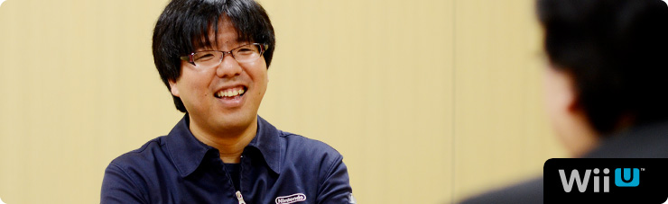 1. “共感ネットワーク” 2. ２階建てのサービス構造 3. ネットワーク方針の大転換 4. 「Wiiが街に」 岩田 “いろんな方たちに参加してもらうサービス” という点においては、『うごくメモ帳』（※17）という、 ひとつの例がありますよね。 このようなサービスもうまく運営できると、 これだけ長い間、活性を維持できることを 近藤さんたちが証明してくれました。 ※17 『うごくメモ帳』＝ニンテンドーDSi、DSi LLに内蔵されたタッチペンで手書きメモを作成できるソフト。何枚も書いたメモを再生して、パラパラマンガ（動画）をつくることもできる。また、インターネットに接続すれば、『うごくメモ帳』でつくった自分の「うごメモ」を公開したり、公開されているほかの人の「うごメモ」を観ることができる。 水木 世の中ではあまり知られてはいないようなんですが、 ユーザー数がずっと右肩上がりでしたよね。 岩田 それで『Miiverse』のサーバー開発をはじめるとき、 水木さんとふたりで、近藤さんに会いに行ったんですけど、 じつはふたつの理由がありました。 ひとつは『うごメモ』でおつき合いがあったこと。 もうひとつは以前、近藤さんから ネットワークサービスに対するご提案を いただいたことがあったからなんです。 その話は、水木さんの話とイコールではありませんでしたが、 内容には関連がありました。 ですから、「この開発をするなら、 以前、任天堂に提案をしてくれたはてなさんに、 まず最初に話を持っていかないといけない」と思って、 近藤さんにご相談に行ったわけです。 近藤 そうでしたね。 そもそもご提案した発端は『うごメモ』にあります。 「うごメモはてな」（※18）のサイトで 「★」をつけたり、コメント機能を追加したり（※19）することで、 アクティブなユーザーがどんどん増えていったんです。 それで気づいたのは、 ゲームをしている人も本当は、 「もっとコミュニケーションをとりたいんだ」 ということでした。 僕自身、子どものころに『マリオブラザーズ』（※20）で、 友達と協力しあって、敵を倒していたことが、 ゲームの楽しい原体験として残っていましたし。 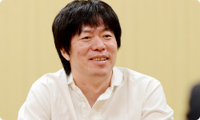 ※18 「うごメモはてな」＝『うごくメモ帳』で書かれた作品を、パソコンやニンテンドーDSiブラウザーなどから楽しめるＷｅｂサイト（２０１３年５月３１日をもってサービス終了）。 ※19 「★」をつけたり、コメント機能を追加したり＝投稿された「うごメモ」を閲覧し、気に入った作品に感想をコメントしたり、面白いと思った気持ちを「★」に変えて気軽に作者へ伝えることができる「うごメモはてな」のシステム。 ※20 『マリオブラザーズ』＝１９８３年、ファミコン用ソフトとして発売されたアクションゲーム。 岩田 ゲームを遊んでいる時間以外に、 友達とゲームについて語り合う時間も、 一連のゲーム体験の面白さの一部なんですよね。 近藤 はい。ゲームを媒介に 人と楽しんできたので、ネットを使えば、 「もっと世界中の人とつながって遊べるのでは？」 という気持ちがありました。 だからお話をいただいたときは、 「いよいよ、きたーっ！」って思いました（笑）。 岩田 （笑）。 水木さんが最初の打ち合わせで、 「近藤さんのお話がすごく勉強になった」 と言っていたことが印象的でしたけど、 とくにどんな話で共感したんですか？ 水木 まず「既存のネットワークサービスのコミュニティは面白い」 という話なんですけど、当時はまだ自分の中で、 「本当にコミュニティをメインに据えていいのかな？」 と、正直、自信がなかったんです。 でも、近藤さんの話を聞いて、確信が持てたんです。 近藤 あ、そうだったんですか。 水木 はい。もうひとつは、 ネットワークサービスの階層構造の話です。 既存のネットワークサービスが１階で、 ２階にオープンなサービスがある、ということで、 １階では「知り合いと安全なやりとりを提供しつつ」 ２階では「見知らぬ人と興味や共感でつながって交流できる」 というイメージを話されていて、 『Miiverse』がこれだけオープンな構造になったのは、 こうした打ち合わせでのインプットが大きかった気がします。 岩田 『Miiverse』も２階建てのサービス構造になっていて、 自分が心を許した人とだけやりとりできる部分と、 同じ興味を持つ、数多くの見知らぬ人と交流できる部分の、 両面があるんですよね。 水木 そうです。 岩田 近藤さんのお話の中で、わたしの印象に残っているのは、 「既存のネットワークサービスのソーシャルグラフ（※21）と、 ゲームのネットワークサービスのソーシャルグラフは、 別物ではないでしょうか？」という視点です。 「既存のサービスでつながっているリアルな人間関係の中で、 ゲームの話がしたいか？」といえば、 「必ずしもイコールとは限らない」というお話でした。 それはわたしの中で、ゼロから独自のソーシャルグラフを つくることを決心させる、大事な言葉でした。 ※21 ソーシャルグラフ＝ＳＮＳ（ソーシャル・ネットワーキング・サービス）などの、ソーシャルメディアにおけるＷｅｂ間での人間関係の相関関係や、そのつながりのこと。現実世界での、リアルな知人関係に基づく関係性を指す場合が多い。 近藤 そうだったんですね。 確かに、既存のネットワークサービスは、 リアルな部分もあるかもしれませんが、 日常って、知り合いじゃない人と接することも多いですよね。 同じ興味を持つ人と知り合うキッカケがあったり、 それについて語り合ったりすることが必要なんです。 水木 確かに “リアルソーシャルグラフ”って言葉を聞くと、 「現実の人間関係が全部入っている」 と思ってしまいますけど、よく考えたら “リアル”って、実際の知り合いだけじゃなく、 見知らぬ人とのやりとりは、現実世界でも多いですもんね。 近藤 ええ。あと、もうひとつ、 とくにアメリカのソーシャルネットワークは、 「人格がひとつじゃなきゃダメ」 みたいな概念がある気がするんですが、 実態は違いますよね？ 水木 ああ、確かに！ 岩田 アメリカ人の友達から聞いたことなんですが、 「ソーシャルネットワークの普及によって いつでも常に周りから見られてしまうので、 “自分はこういう人”っていう一貫性を持って生きていないと、 最近はプライベートタイムも気が抜けなくて大変なんだ」 と話していたことがあります。 その意味で、ソーシャルネットワークの普及で、 みんなが“可視化された世界”に生きているわけで、 便利な世の中になったけれども、 逆に窮屈さも生まれたのかもしれませんね。 水木 わかります。 つい「誕生日おめでとう！」とか、 さしさわりないコメントを書いてしまうとか（笑）。 近藤 そうそう（笑）。 でも友達と接している自分もいれば、 ゲームの中での自分もいて、 いろいろあって、いいと思うんです。 岩田 オンとオフのときでスイッチが切り替わって、 別の人格になっている人は、 いっぱいいるでしょうからね。 水木 その意味では 「ソーシャルネットワークは実名にしなきゃいけない」 という流れがあるなかで、『Miiverse』はそれにこだわらず、 Miiのニックネームを、そのまま表示できるようになっています。 岩田 はい。ただし、ごくわずかですけど、 匿名となると、行儀の悪くなってしまう人がいて、 コミュニティが破壊してしまうことがあります。 実名を使うっていうのは、 それにブレーキを踏むための手段のひとつですけど、 そもそも同じ“共感”で結ばれていたら、 実名かどうかは、あまり関係なくなる気がするんです。 「それぐらい共感で結ばれることは大事ではないか」 と思ったんです。 水木 はい。 岩田 それともうひとつ、わたしが宮本（茂）さんという マリオをつくった人と仕事をしてきて思ったことは、 「宮本さんは“人の共感を得ること”に対して、 とてつもない執念を発揮してものづくりをしている人だ」 と気づいたからなんです。だからこそ、 「『Miiverse』のテーマが“共感”であることは任天堂らしい」 と思ったんです。 水木 それで“共感ネットワーク”なんですね。 いま、その言葉の本当の意味がわかりました（笑）。 近藤 じつは僕もいま、 わかったことがあるんですけど（笑）。 『Miiverse』には、その人の発言に対して、 共感したらポチッと押すだけの 「共感ボタン」がついています。 それは“自分のコメントに対して共感してもらえる” という意味だけではなく、そもそもゲームに対して、 “いっしょに遊んだ人同士が、共感しあう”という “二重の共感”があるんですね。 岩田 そうです。共感しあえば、感想や意見を 交換しやすくなるし、交流が生まれれば、 ゲームがもっと面白くなるはずだし、 『Miiverse』で見知らぬ人との共感が増えれば、 自分に合ったゲームとの出会いのチャンスも広がるはずです。 まさにそこが、わたしがこの企画を進める 強い動機になっています。 水木 あの・・・正直に申しますと、“共感”について 僕も完全に理解していたわけじゃありませんでした。 でもその“共感”というキーワードを元に、 仕様を考えていくことができたんです。 少なくとも“ソーシャル”というキーワードだけだと、 ネットワークの階層構造の１階を 整備することに一生懸命になって、 いまとは違うサービスになっていたかもしれません。 でも“共感”は見知らぬ人同士がつながりあうことだから、 「２階をつくろう」という意識が生まれたんだと思います。 1. “共感ネットワーク” 3. ネットワーク方針の大転換
1. “共感ネットワーク”
2. ２階建てのサービス構造
3. ネットワーク方針の大転換
4. 「Wiiが街に」